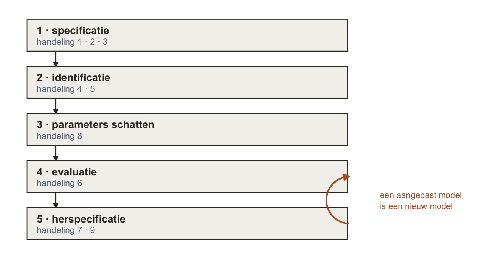
5. Confirmatory Factor Analysis (CFA) — eerst tekenen, dan pas kijken
Het verhaal van dit thema
De das stak zijn kop boven het zand uit en keek naar de rat, die nog steeds op zijn schommeltak zat.
“Jij hebt vorige week gezocht,” zei de das. “Twaalf items, en je liet de machine uitzoeken hoeveel richtingen erin zaten.”
“Drie,” zei de rat. “Piekeren, alertheid, uitstelgedrag. Netjes.”
“Dat ga ik niet zoeken. Dat weet ik al.” De das klom eruit en veegde het zand van zijn poten. “Ik teken het eerst. Drie factoren, elk vier items. En dán pas kijk ik naar de data — en dan vraag ik: klopt dit?”
“En als het niet klopt?”
“Dan klopt het niet.” De das gromde. “Maar ik ga niet net zo lang pijlen bijtekenen tot het wél klopt. Dat is bouwen op drijfzand.”
De bunzing, die dit alles had aangehoord, stak zijn snuit omhoog. “En als het bíjna klopt?”
De das dacht na. “Dan kijk ik wáár het wringt. Daar heb ik de residuen voor.” Hij snoof. “Kijken waar het wringt is iets anders dan het dichtsmeren.”
Dit thema gaat over die weddenschap: eerst tekenen, dan pas kijken. Dezelfde 200 bosdieren als vorige week, dezelfde twaalf items op een -puntsschaal. De rat liet de data de pijlen tekenen. De das tekent ze zelf, en de data mogen alleen nog zeggen of hij gelijk had.
Drie hoofdvragen:
- Past het model dat de das tekende bij de data? Een toets () en drie fit-maten: RMSEA, NFI en CFI.
- Hoe sterk hangen de items aan hun factor? Gestandaardiseerde ladingen, en de toets of zo’n pijl van nul verschilt.
- Waar wringt het, en wat doe je daarmee? Residuen lezen, en weten wanneer je er niet achteraan mag.
Voordat we beginnen — wat je al hebt
Drie dingen die je al kunt, en één pijl die omdraait
Even terug, want “eigenlijk voelt het gewoon een beetje hetzelfde. Het moet een beetje hetzelfde voelen.”
Regressie. Als ik regressiemodel zeg, dan denk jij: zo’n lijntje. Puntenwolk, lijntje erdoorheen. Dat lijntje leg je zo netjes mogelijk óp de data, en dan vraag je: past het? Vandaag doen we niets anders. “We bouwen een model, leggen hem op de data en we kijken of het past.” Alleen is het model vandaag geen lijntje maar een tekening met pijlen.
Thema 4. Vorige week had je twaalf items en keek je of er groepjes in zaten die lekker samen correleerden. Dat zag je aan de ladingen: items die hoog op één component laadden, hoorden bij elkaar. Teken je dat, dan wijzen de pijltjes van de items naar de component. Je hoefde van tevoren niets te weten. Dat was exploratief: ontdekken.
Thema 1. Een somscore was een optelling van items. Een component in thema 4 was een gewogen optelling. Allebei: items erin, één getal eruit.
En nu draait de pijl om.
OpmerkingExploratief tegenover confirmatief
“Confirmatie betekent zoiets als bevestiging. Maar als je een bevestiging geeft, dan betekent dat dat er wel al een idee moet zijn. Anders kan je het niet bevestigen.”
Dus we starten met een idee: een model waarvan wij al denken dat het zo in elkaar zit — díé items meten dat, díé andere items meten dat andere. Uit de literatuur, of uit een PCA van vorige week. En dan toetsen we of het klopt.
Toetsen betekent een hypothese. of : past het wel, past het niet? Welke van de twee is, zie je straks bij de modeltoets — en het is niet wat je gewend bent. Thema 4 toetste je model niet; Bartlett, de toets die daar wél stond, ging over de data en niet over jouw tekening. Vandaag komt er een toets op het model bij, en verder moet het gevoel hetzelfde blijven.
Eén ding om vast te houden uit thema 4: PCA en EFA zijn allebei exploratief, en het verschil ertussen — geen errorterm tegenover wél een errorterm — staat daar in de Don’t aan het eind. Dat verschil kom je zo weer tegen.
Eén naam om te onthouden: confirmatieve factoranalyse, kortweg CFA. Vorige week deed je PCA: exploratief, maar geen factoranalyse. Vandaag doe je wél een factoranalyse, de confirmatieve. Het R-pakket ervoor heet lavaan.
De vijf stappen — je route, voor je vertrekt
Waar dit hoofdstuk je langs brengt
“Dus dat is wel de hoofdprocedure. […] Dat is in principe gewoon het hele proces, dus maak het ook niet te heftig.”
Een CFA loopt in je college langs vijf stappen, en die vijf moet je kennen voor je tentamen. Hier staan ze, voordat je er eentje doet:
Dit hoofdstuk loopt die vijf langs, maar niet netjes van boven naar beneden. Onder elke kop hierna staat een grijze regel die zegt welke stap je op dat moment doet, en die regel loopt niet op. Stap 5 kom je al vroeg tegen, ruim vóór stap 4: het residu — wat je waarneemt min wat je model beloofde — is het gereedschap van de herspecificatie, en je moet weten wat dat gereedschap ís voordat de fitmaten je iets kunnen zeggen. Daarna komt stap 2, en na stap 2 meteen stap 4. Van 4 gaat het terug naar 5, dan naar 3, en aan het eind nog één keer naar 5. Stap 3 is dus niet overgeslagen — hij komt laat.
Dat is geen slordigheid, en je college zegt het zelf. R rekent eerst stap 3 en dan stap 4: het schatten gebeurt in dezelfde regel als de fit, dus je hebt stap 3 al gedaan zonder het te merken. Jij leest eerst stap 4 en dan pas stap 3 — want past het model niet, dan hoef je de pijlen niet meer te bekijken.
Het is dus geen lijstje maar een rondje — al gaat dat rondje niet terug naar het begin. De oranje pijl rechts zegt waar hij wél heen gaat: pas je je model aan, dan is het een nieuw model, en dat moet opnieuw langs de evaluatie, stap 4.
Wat je bij elke stap precies dóét, staat aan het eind van dit hoofdstuk nog een keer op een rij. Dan heb je ze alle vijf gedaan, en zegt die tabel je ook echt iets.
Eerst tekenen: het model van de das
college-stap 1 · specificatie
Vierkantjes, rondjes, pijlen
Pak een blaadje. Teken twaalf vierkantjes onder elkaar: p1 tot en met p4, a1 tot en met a4, u1 tot en met u4. Zet er drie ovalen naast — piekeren, alertheid, uitstelgedrag — en trek pijlen. Van welke ovaal naar welke vierkantjes? Doe het eerst zelf; hieronder staat hoe de das het deed.
Waarom vierkantjes en ovalen? Items zijn dingen die zich laten zien. Hoe vaak pieker jij? Tien keer per dag — dat is gedrag, dat kun je meten. Dat heet manifest. Wat daar misschien aan ten grondslag ligt — een sombere bui, een neiging tot uitstellen — kun je niet zien. Dat heet latent. Een vierkantje is manifest, een ovaal is latent, en de pijl gaat van de ovaal naar het vierkantje: er bestaat zoiets als piekeren in dit dier, en dat veroorzaakt zijn antwoord op p1.
En dan de errorpijlen. Als ik precies zou weten hoeveel dit dier piekert, zou ik dan precies kunnen voorspellen wat het op p1 invult? Vast niet. Er zit ruis in. Dus elk item krijgt nog een pijltje van opzij: , de error van item 1. Die error is óók latent — je ziet hem net zomin als het piekeren zelf — maar hij krijgt gewoonlijk géén rondje. Op je collegesheets staat hij als een zónder ovaal eromheen, met één rechte pijl het vierkantje in, en dát is de vorm die je zelf tekent. Het nummer loopt met het item mee: p1 is item 1 en krijgt , u4 is item 12 en krijgt . (In je boek staat er soms wél een ellips omheen. Zelfde ding, andere tekenwijze.)
Toon code (semPaths)
# fixedStyle: alles wat in het model vást staat (de factorvarianties op 1, de
# drie samenhangen op 0) wordt niet getekend -- lijntype 0 is onzichtbaar.
# Anders tekent semPaths gestippelde dubbele pijlen tussen de factoren, en
# dat is precies wat de das níét getekend heeft.
#
# style = "lisrel" sinds 30-9-2026, en dat is de hele reden dat deze figuur nu
# bij de tekst klopt. Standaard ("ram") tekent semPaths de error als een
# DUBBELE ZELFLUS aan het vierkantje; de collegesheets tekenen hem als een
# kale E met EEN ENKELE RECHTE PIJL het vierkantje in (sheet 14 is de legenda
# en zegt het met zoveel woorden: "Errors (ook latent, maar krijgen gewoonlijk
# geen ellips)"). "lisrel" geeft precies die vorm -- enkele pijl, geen
# bronknoop. Wat er dan nog mist is de letter E zelf, en dat zegt het
# bijschrift.
#
# LET OP voor wie dit terugdraait: de vorige versie beweerde in het bijschrift
# dat semPaths de collegevorm niet KON tekenen. Dat was fout, en het kwam
# doordat er in de argumentenlijst gezocht was op "resid|error|exo|node" --
# `style` viel buiten dat net. Testlezer Beeldverteller ving het (30-9-2026).
#
# label.scale.equal sinds 30-9-2026: zonder die schakelaar krimpt semPaths
# ELK label apart tot het in zijn eigen rondje past, en dan staat
# "uitstelgedrag" (dertien letters) zichtbaar kleiner op de bladzijde dan
# "alertheid" en "piekeren". Drie factoren die even belangrijk zijn horen even
# groot te staan; nu kiest qgraph een maat die voor alle drie past.
#
# mar en fig-height sinds 30-9-2026: twaalf vierkantjes horen twaalf losse
# dingen te zijn, en ze lagen tegen elkaar aan -- een vak was precies zo hoog
# als de afstand tussen twee vakken, en de kolom las als één tabel. `mar` is de
# marge die semPaths om de tekening houdt, als onder-links-boven-rechts.
# Standaard is dat hier 5, 8, 5, 8; boven en onder naar 1 geeft de kolom de
# hoogte die anders wit bleef. Kleinere vakjes waren de andere weg, maar dan
# krimpen ALLE letters mee, ook de factornamen: `label.scale.equal` geeft elk
# label de kleinste maat die overal past.
q_model_1 <- semPaths(fit_1,
what = "path",
layout = "tree",
rotation = 2,
sizeMan = 5,
sizeLat = 12,
nCharNodes = 0,
freeStyle = c("black", 1),
fixedStyle = c("white", 0),
residuals = TRUE,
intercepts = FALSE,
title = FALSE,
style = "lisrel",
label.scale.equal = TRUE,
mar = c(1, 8, 1, 8))
errorletters(q_model_1, items)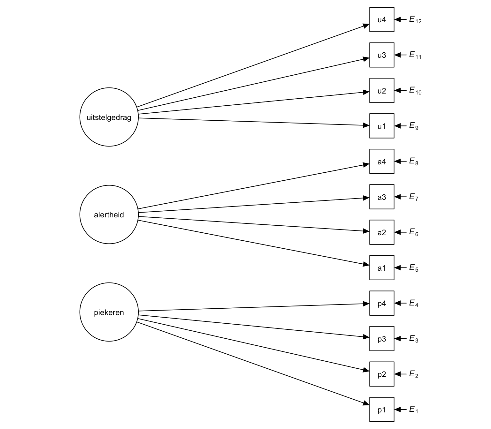
p1 onderaan. Rechts van elk vierkantje komt een korte pijl naar binnen met een ernaast: dat is zijn error, in dezelfde vorm als op je collegesheets. De nummers lopen met de items mee — p1 is item 1 en krijgt , u4 is item 12 en krijgt .
Kijk naar wat er niet staat. Tussen de drie ovalen loopt geen enkele pijl. De das heeft dat met opzet gedaan: “Piekeren is piekeren en uitstellen is uitstellen. Twee verschillende dingen.” Wat je niet tekent, staat op nul — een verband dat er niet is. Onthoud dat, want daar gaat de das straks op stuk.
En let op het verschil, want dat is de hele grap van een confirmatief model: een pijl weglaten is niet dat weet ik niet, het is die is nul. Je college heeft daar een woord voor: zo’n vastgezette nul is een restrictie — een parameter die jij op een vaste waarde zet, in plaats van hem door R te laten schatten. Een restrictie is geen open plek maar een bewering, en precies daarom valt er straks iets te toetsen. Een model dat overal een pijl trekt heeft geen restricties, belooft niets en kan dus ook niet ongelijk krijgen.
OpmerkingLoop je tekening na — vijf dingen die een CFA-model heeft
Voordat je verder gaat: leg deze vijf naast je blaadje. De eerste drie zeggen wat je wél mag tekenen, de laatste twee wat er nergens mag staan — en die laatste twee zijn de twee CFA-aannames.
Wat mag:
- Van ovaal naar vierkantje loopt een enkele pijl, en altijd die kant op: de factor veroorzaakt het item, niet andersom.
- Elk vierkantje waar zo’n pijl naartoe wijst, krijgt een errorterm. Bij ons zijn dat alle twaalf.
- Een dubbele pijl mag op twee plekken: tussen twee ovalen, of tussen twee errors.
Wat nergens mag:
- Tussen twee vierkantjes staat niets — geen enkele pijl en geen dubbele. Dat is de eerste CFA-aanname: alle samenhang tussen de items loopt via de factoren en de errors, en er is geen restje dat rechtstreeks van item naar item gaat.
- Tussen een ovaal en een error staat ook niets. Dat is de tweede: de factoren hangen niet samen met de errors. Wat de factor niet verklaart is ruis, en ruis weet niets van de factor.
Twee paren die makkelijk door elkaar lopen, dus let op het verschil. 1 tegenover 4: punt 1 gaat over de pijl van ovaal náár vierkantje, punt 4 over de ruimte tússen twee vierkantjes — die is helemaal leeg. 3 tegenover 5: twee errors mogen best samenhangen (punt 3), maar een error en een factor nooit (punt 5).
Die laatste twee kosten je niets zolang ze kloppen. Kloppen ze niet, dan gaat het model wringen op een plek waar je niet gekeken hebt — en dat is precies wat de residuen bij de herspecificatie aan het licht brengen.
OpmerkingVan tekening naar
lavaan, en terug
“Vanuit een verhaaltje moet je zo’n plaatje kunnen tekenen. Of andersom, bij een plaatje moet je een verhaaltje kunnen herkennen.” En in R moet je het plaatje kunnen vertalen. Drie tekens, meer is het niet:
| in de tekening | in lavaan |
betekent |
|---|---|---|
| pijl van ovaal naar vierkantje | piekeren =~ p1 + p2 + p3 + p4 |
piekeren is gemeten door p1 tot en met p4 |
| dubbele pijl tussen twee ovalen | piekeren ~~ alertheid |
deze twee mogen samenhangen |
| géén dubbele pijl | piekeren ~~ 0*alertheid |
hun samenhang staat vast op nul |
Dat laatste moet je erbij zetten, want lavaan laat factoren standaard samenhangen. Wie niets zegt, krijgt de dubbele pijl erbij. De das wil hem niet, dus hij zet hem zelf op nul:
model_1 <- '
piekeren =~ p1 + p2 + p3 + p4
alertheid =~ a1 + a2 + a3 + a4
uitstelgedrag =~ u1 + u2 + u3 + u4
piekeren ~~ 0*alertheid
piekeren ~~ 0*uitstelgedrag
alertheid ~~ 0*uitstelgedrag
'De errorpijlen hoef je niet te typen; die zet lavaan er zelf bij, één per item.
Nog één ding aan die tekening, en dat is het ding waar dit hele thema aan hangt. Neem p1. Welke pijlen wijzen erheen? Eén van piekeren en één van . Dus:
Het item is het gevolg van de factor, en een beetje error. Dat is een regressievergelijking — één predictor, één gewicht, en een restje. Zo’n gewicht heet hier een lading, : item op factor . “Of je dat nou b of a noemt — laten we het maar even gewoon a noemen vanaf nu.” Op je collegesheets heet dezelfde lading , met dezelfde volgorde: eerst het item, dan de factor. Kom je daar tegen, lees dan de lading van item 1 op factor 1 — zelfde pijl, andere letter. Voor elk item schrijf je zo’n regeltje op, en samen zijn die twaalf regeltjes je model. “Dus voor elk item zou je even moeten kijken wat voorspelt hem.”
Je college noemt zo’n regeltje een structurele vergelijking, en de tekening een pijldiagram. Het zijn twee manieren om hetzelfde model op te schrijven, en ze zijn gelijkwaardig: elke pijl die een vierkantje in wijst is een stukje van zijn vergelijking, en elk stukje van de vergelijking is een pijl. Alleen de dubbele pijlen tússen de ovalen zitten niet in die twaalf regels; die schrijf je er apart onder, zoals lavaan dat ook doet met ~~.
Nog iets wat je op de sheets ziet staan en hier niet: vóór de staat daar een . — dat is de vergelijking van item 1 op factor 1, bij ons dus p1 op piekeren. Die is geen getal dat iemand geschat heeft — het is de afspraak dat de error zijn volle gewicht meekrijgt, zodat er op die pijl niets te schatten valt. Wat er bij een errorpijl wél geschat wordt, is hoe groot de error zelf is: zijn variantie. Daarom telt elke errorpijl straks als één parameter.
OpmerkingWat er draait sinds thema 4
Je hebt net getekend, dus je hebt het in je hand. Leg je tekening naast die van vorige week:
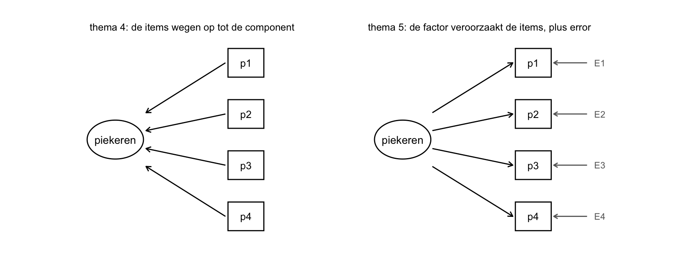
Drie dingen zie je aan die tekening, en die zijn het hele verschil:
- De pijl draait. Vorige week was een component een gewogen som van items. Nu zit de factor in het dier en veroorzaakt hij het antwoord. Een factor is vanaf nu geen optelsom meer.
- Elk item houdt een error over. Wat de factor niet verklaart, krijgt zijn eigen pijltje. Thema 4 had dat niet.
- Jij tekent de pijlen, en wat je niet tekent staat op nul. Vorige week mocht elk item overal op laden en draaide je daarna de assen tot het leesbaar werd. Dat draaien bestaat hier niet meer.
Wat hetzelfde blijft: een lading heet net als vorige week , item eerst en dan de factor, en een hoge lading betekent net als vorige week dit item hoort bij die factor. En er komt één ding bij: een toets. Verderop komt dit een paar keer kort terug, precies waar het verschil bijt.
OpmerkingTerzijde — drie letters voor dezelfde pijl: a, f en λ
Eén pijl, drie schrijfwijzen. Ze betekenen alle drie hetzelfde ding, en de volgorde van de subscripts is overal gelijk: eerst het item, dan de factor.
| waar je hem ziet | hoe hij heet |
|---|---|
| dit oefenboek, en thema 4 | |
| je collegesheets | |
lavaan-uitvoer en de SEM-literatuur |
(lambda) |
Waarom hier niet gewoon λ? Omdat λ in dit oefenboek al vergeven is aan de eigenwaarde uit thema 4, en die twee wil je niet door elkaar halen. En waarom niet ? Omdat thema 4 al schreef, en je de ladingen van vorige week straks naast die van deze week legt; dan helpt het als ze dezelfde letter dragen. Op je tentamen staat , en dat is dezelfde pijl.
OpmerkingTerugblik op thema 2 — de ware score is een factor
In thema 2 bestond een score uit twee stukken: de ware score, wat je zou meten als je instrument geen ruis had, en die ruis zelf. Je college schrijft dat als het klassieke testmodel:
met de score die je ziet op item , de ware score en de error. Zet hem onder de vergelijking van p1 en je ziet dezelfde vorm:
Lees de ware score van elk item als één en dezelfde factor met een lading ervoor, , en geef élk item dezelfde . Dan heb je het klassieke testmodel vertaald in een CFA met één factor en één restrictie: alle ladingen zijn aan elkaar gelijk. De factor is daar de gemeenschappelijke oorzaak van de samenhang tussen de items — ze hangen met elkaar samen omdat ze allemaal aan hem hangen. En wat je in thema 2 als betrouwbaarheid uitrekende, schat dan de gekwadrateerde correlatie tussen de testscore die je ziet en de ware testscore, mits aan een paar aannames is voldaan (je sheet noemt ze niet, en dit hoofdstuk ook niet).
Daarmee wordt het klassieke testmodel iets wat je kunt toetsen, met het gereedschap van dit hoofdstuk. Zijn alle ladingen echt gelijk? Dat is een restrictie, dus je zet het model mét die restrictie naast het model zonder: genest, en dus een vraag voor , die verderop in dit hoofdstuk komt. En is één factor genoeg om alle correlaties tussen de items te verklaren?
De weddenschap: wat voorspelt dit plaatje?
college-stap 1 · specificatie
Plusjes en nulletjes, vóór er één getal is
Vul dit in voordat je verder leest. Stel dat het model van de das klopt, en stel dat je bij onze bosdieren de correlatiematrix van de twaalf items opvraagt. Wat verwacht je dan in de cel van p1 met p2? En in de cel van p1 met a1? Zet een + of een 0. Meer hoeft niet.
“Stel dat dit idee klopt. Stel, stel, stel, stel.” Twee piekeritems horen bij dezelfde factor, dus die moeten samenhangen — anders zou het raar zijn. Dat wordt een dikke plus. Hoe dik weet je niet: “dat mag punt 8 zijn, dat mag punt 9 zijn, maar het mag niet 0 zijn.” En p1 met a1? Volgens de das hebben piekeren en alertheid niets met elkaar te maken. Dus daar hoort een nul.
Toon code (de voorspelde matrix)
voorspeld <- expand.grid(rij = items, kol = items, stringsAsFactors = FALSE) |>
mutate(ri = match(rij, items), ki = match(kol, items),
teken = case_when(ri == ki ~ "1",
blok[rij] == blok[kol] ~ "+",
TRUE ~ "0")) |>
filter(ri >= ki)
ggplot(voorspeld, aes(ki, -ri)) +
geom_tile(aes(fill = teken), colour = "white", linewidth = 0.8) +
geom_text(aes(label = teken, colour = teken), size = 5) +
scale_fill_manual(values = c("+" = "#cfe3f0", "0" = "white", "1" = "grey85"),
guide = "none") +
scale_colour_manual(values = c("+" = "black", "0" = "grey45", "1" = "black"),
guide = "none") +
scale_x_continuous(breaks = 1:k, labels = items, position = "top", expand = c(0, 0)) +
scale_y_continuous(breaks = -(1:k), labels = items, expand = c(0, 0)) +
coord_fixed() +
labs(x = NULL, y = NULL) +
theme_minimal(base_size = 11) +
theme(panel.grid = element_blank())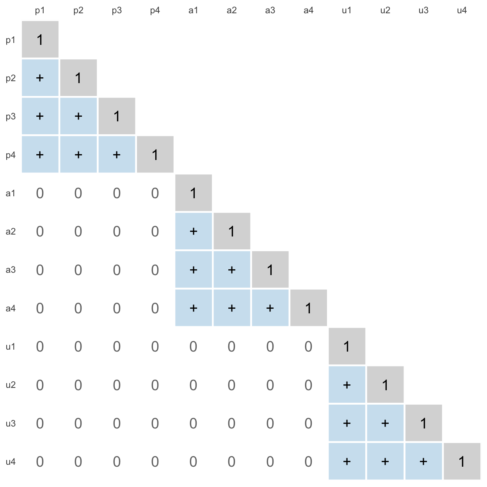
Dit is de verwachte, theoretische correlatiematrix. Er staat nog geen enkel getal in, en toch zegt hij iets: drie blokken plusjes op de diagonaal, en daarbuiten alleen nullen. Dat is wat de das belooft. Zeg tegen R hoe je model eruitziet, en R rekent uit hoe die matrix er dan precies uit zou moeten zien — niet alleen plus of nul, maar de getallen zelf. Die noemen we straks de teruggeschatte matrix.
En nu de data. De echte correlatiematrix, gewoon opgevraagd:
round(cor(bos[, items], use = "complete.obs"), 2) p1 p2 p3 p4 a1 a2 a3 a4 u1 u2 u3 u4
p1 1.00 0.55 0.49 0.54 0.25 0.12 0.35 0.25 0.11 0.17 0.09 0.10
p2 0.55 1.00 0.50 0.56 0.27 0.17 0.27 0.31 0.07 0.12 0.08 0.11
p3 0.49 0.50 1.00 0.48 0.23 0.17 0.24 0.27 0.11 0.12 0.09 0.13
p4 0.54 0.56 0.48 1.00 0.25 0.23 0.29 0.33 0.12 0.20 0.17 0.20
a1 0.25 0.27 0.23 0.25 1.00 0.52 0.49 0.51 0.26 0.28 0.18 0.23
a2 0.12 0.17 0.17 0.23 0.52 1.00 0.53 0.47 0.29 0.31 0.21 0.23
a3 0.35 0.27 0.24 0.29 0.49 0.53 1.00 0.52 0.31 0.37 0.20 0.28
a4 0.25 0.31 0.27 0.33 0.51 0.47 0.52 1.00 0.29 0.25 0.17 0.23
u1 0.11 0.07 0.11 0.12 0.26 0.29 0.31 0.29 1.00 0.55 0.50 0.53
u2 0.17 0.12 0.12 0.20 0.28 0.31 0.37 0.25 0.55 1.00 0.57 0.59
u3 0.09 0.08 0.09 0.17 0.18 0.21 0.20 0.17 0.50 0.57 1.00 0.52
u4 0.10 0.11 0.13 0.20 0.23 0.23 0.28 0.23 0.53 0.59 0.52 1.00Vergelijk hem met je plusjes en nulletjes. Binnen de blokken lopen de correlaties van tot — plusjes, zoals beloofd. Maar kijk naar de cellen daarbuiten: van tot . Dat zijn geen nullen. Kleiner dan de plusjes, jawel — maar niet nul.
Je ziet het al, met het blote oog en zonder één toets: de das heeft iets gemist. Wat precies, en hoe erg, dat gaan we nu netjes doen.
Wat je waarneemt min wat je beloofde
college-stap 5 · herspecificatie
r − r̂ = residu
Twee getallen, verzin ze zelf. Stel, in het echt is de correlatie tussen p1 en p2 punt 8. En het model had gezegd: punt 7 — ik doe maar wat. Hoeveel zit het model ernaast? En stel dat de correlatie tussen p1 en a1 in het echt punt 3 is, terwijl het model nul had beloofd?
Dat verschil per cel is het residu: wat je waarneemt min wat het model beloofde. Punt 8 min punt 7 is punt 1, en punt 3 min 0 is punt 3. En die tweede is erger.
Zo staat de formule ook op je collegesheets: is het residu van item met item . Waarom daar een z voor staat, lees je zo meteen. Het dakje op betekent, net als bij in regressie: dit is wat uit het model rolt. Zo’n residu bereken je voor élke cel, en dan heb je een hele residuenmatrix. “Daar hoop je eigenlijk dat er allemaal nulletjes staan.” Want dan klopt jouw plaatje met de werkelijkheid: waargenomen is teruggeschat.
TipWie zat er te hoog — het teken van een residu
Doe eens een schatting van mijn leeftijd. Noem een getal, echt — niemand kijkt. Stel je zei 45. Ik ben 50. Heb je me nou onderschat of overschat?
Onderschat. Want jouw model zat eronder — en je kijkt altijd vanuit het model. Werkelijk min model: . Een positief residu betekent dat het model te laag zat, dus de samenhang onderschat. Een negatief residu betekent het omgekeerde: het model zat te hoog, en overschat de samenhang. Dat wordt op tentamens gevraagd, en de val is de richting. Wat ten opzichte van wat — daar gaat het mis.
Eerst met kleine getallen, dan pas met correlaties: , en .
Eén afspraak nog. Hoe groot mag zo’n residu zijn voor je ervan schrikt? “Laten we even afspreken voor nu: als het tussen de min punt 1 en de plus punt 1 ligt, dan vinden we het wel dicht bij 0.” Een tiende in een correlatie is wat je met het blote oog in een puntenwolk terugziet; daaronder zoeken we niet.
OpmerkingRuw of gestandaardiseerd — en waarom het hier de correlatie is
Dit kan met covarianties en het kan met correlaties. Covariantie is de ruwe samenhangsmaat — ruw is ruk, je hebt er niks aan, maar toch kom je hem af en toe tegen. Een residu van op covariantieschaal zegt je niets zolang je de varianties van de twee items niet kent. Op correlatieschaal ligt alles tussen en en kun je cellen met elkaar vergelijken.
Daarom rekenen we hier op de correlatieschaal, en in lavaan vraag je dat op met type = "cor". De cursus noemt zo’n residu een gestandaardiseerd residu — onthoud dat woord, want zo heet het in je werkboek en op je tentamen. Daar komt de z van vandaan, en je hoort ook wel z-residu. Gestandaardiseerd betekent hier niets anders dan op correlatieschaal: het is gewoon het verschil tussen twee correlaties, geen z-score met een grens van .
R gaat die residuenmatrix straks voor je uitrekenen. Maar niet nu. Eerst nog twee dingen die je vóór het rekenen doet — en die allebei op het tentamen zitten.
Tellen voor je rekent: V, p en df
college-stap 2 · identificatie
Een cadeautje op je tentamen
Tel de pijlen op je tekening. Alle pijlen, elke soort apart: de errorpijlen, de pijlen van een ovaal naar een vierkantje, en de dubbele pijlen tussen ovalen. Schrijf de drie getallen op. Doe het echt, want zo meteen controleer je het tegen wat lavaan zegt.
Drie soorten, netjes onder elkaar:
- errorpijlen: elk item heeft er één, dus 12.
- voorspelpijlen — de ladingen: elk item hangt aan precies één factor, dus ook 12.
- correlatiepijlen — de dubbele: de das tekende er 0.
Samen , en anders dan in thema 4 telt die hier geen items maar de parameters van het model: alle getalletjes die R straks moet schatten. “Een dubbele pijl telt als één dingetje. Je wil één dingetje ervan weten.”
Nu de andere kant: hoeveel informatie heb je om die 24 getallen uit te halen? Kijk naar je plusjes-en-nullen-matrix van de weddenschap en tel de vakjes — de onderste driehoek, mét de diagonaal. Je komt op 78. Dat is : alle varianties (de diagonaal, 12 stuks) plus alle covarianties eronder. Elke pijl die je tekent, eet één van die vakjes op.
Met de formule die op je tentamen mag, gaat het sneller dan tellen:
met het aantal items, een letter die in thema 4 nog de componenten telde.
En dan:
“Het zit altijd in het tentamen.” De vrijheidsgraden van een model: hoeveel getallen je probeert na te bootsen, min hoeveel getallen je daarvoor mag schatten. Ben je het ermee eens dat hoe meer pijlen je trekt, hoe hoger wordt — en dus hoe lager ? Een complexer model heeft minder vrijheidsgraden. Houd dat vast.
WaarschuwingTwee letters die je uit thema 4 anders kent
In thema 4 stond voor het aantal items en voor het aantal componenten, net als in het werkboek van de opleiding. Hier schuiven ze allebei op: is het aantal parameters — pijlen — en het aantal items heet . Op je collegesheets heet dat aantal parameters , met een hoofdletter, en is daar net als hier het aantal manifeste variabelen; de formule en de aftrekking zijn dus dezelfde als hier. En λ, dat in thema 4 de eigenwaarde was, blijft in dit oefenboek de eigenwaarde, en een lading heet hier net als in thema 4 . Zelfde letters, andere dingen: dat geldt dus alleen voor en .
Eén regel om erbij te onthouden: tel de pijlen, en zeg erbij dat de factoren op staan. Waarom dat erbij moet, staat hieronder; op het tentamen volstaat de regel.
WaarschuwingWaarom “tel de pijlen” alleen klopt als de factoren op 1 staan
Een latente factor heeft geen eenheid. R moet hem er dus een geven, en dat kan op twee manieren: de factor zelf op variantie zetten (std.lv = TRUE, wat wij doen) of de eerste lading van elke factor op vastzetten (lavaans standaard, de marker). Die twee opties staan ook op je collegesheets, in deze volgorde en met dezelfde waarde erbij — meestal . Bij die tweede afspraak is één pijl per factor géén vrije parameter meer, maar de factorvariantie wél. Tel het na voor model 1: 9 vrije ladingen plus 12 errors plus factorvarianties is 24 — precies hetzelfde als 12 plus 12. Het aantal vrije parameters is gelijk, alleen zijn het andere. De , de en alle fit-maten zijn daarom in beide gevallen identiek.
En de getallen die je uiteindelijk rapporteert ook. De gestandaardiseerde ladingen — de kolom Std.all, waar je straks de pijlen zelf uit leest — zijn onder allebei de afspraken dezelfde. Dat is hier op ons eigen model nagerekend en niet overgeschreven: het grootste verschil tussen de twaalf ladingen van de ene en de andere afspraak zit pas op de zevende decimaal. Zo staat het ook op het college: welke van de twee je kiest, maakt in de praktijk weinig uit, want de gestandaardiseerde oplossing is identiek.
Nog een adder. Het practicummateriaal van de cursus zegt hierover dat je de residuvarianties op zet. Dat is niet zo: std.lv = TRUE zet de varianties van de latente factoren op . Je ziet het zo in de uitvoer — ook in de uitvoer die de cursus zelf afdrukt: onder Variances krijgen de factoren een kale zonder standaardfout, en de residuvarianties van de items staan daar met hun eigen geschatte waarde én standaardfout onder. Waren ze op gezet, dan hadden ze allemaal moeten zijn. Vraagt het tentamen wat het betekent dat de varianties van de factoren zijn, dan is dít het antwoord: de factoren zijn op een vaste schaal gezet, zodat de ladingen te schatten zijn.
Is het model wel te toetsen? Identificatie
college-stap 2 · identificatie
Eén punt, oneindig veel lijnen
Teken twee puntjes op een blaadje, en trek er een regressielijn door. Lukt dat? Ja — hij kan niet missen. En nu: zou je uit die twee puntjes kunnen schatten hoe die lijn bij herhaling zou variëren? Dat wordt lastig. “Als je maar twee puntjes hebt, heb je te weinig informatie om te schatten hoe het zou variëren bij herhaling.” Je kunt de lijn wel tekenen, maar niet toetsen. En met één puntje? Dan passen er oneindig veel lijnen doorheen, en kun je hem niet eens tekenen.
Dat is wat je vertelt over een model:
| ondergeïdentificeerd under-identified | meer pijlen dan vakjes: het model is niet te schatten | |
| precies geïdentificeerd just identified | precies genoeg: te schatten, maar niet te toetsen — het past altijd | |
| overgeïdentificeerd over-identified | er blijft informatie over, en dáár toets je mee |
Je kent dit al van vroeger, en het college zet de drie gevallen ook zo neer. : dat los je op, . Maar ? Als één is, is negen; als twee is, is acht. Oneindig veel oplossingen — ondergeïdentificeerd, het geval . Geef er een tweede vergelijking bij, , en het stelsel is wél op te lossen: uit de eerste volgt , vul dat in de tweede in, en er komt precies één antwoord uit — en . Een nul als antwoord voelt raar, maar het is er precies één. Dat is , precies geïdentificeerd: het past perfect, en juist daarom valt er niets te toetsen.
En nu het derde geval, en dat is degene waar dit hoofdstuk in leeft. Zet er een dérde vergelijking bij, , en kijk wat je oplossing daar doet: , en er werd 18 gevraagd. Er bestaat nu geen enkel paar en dat alle drie de vergelijkingen tegelijk waarmaakt. Wat je dan doet is niet opgeven maar het beste compromis zoeken — de waarden die er gezamenlijk het minst naast zitten. En dat restje, dat wat er ná het beste compromis nog overblijft, is precies wat straks meet. Dat is : overgeïdentificeerd, geen perfecte maar wel een minst slechte oplossing, en toetsbaar.
Twee onbekenden hebben twee vergelijkingen nodig. Een model met 24 parameters heeft 24 vakjes nodig, en toetsen kan pas met wat er daarna overblijft.
Je kunt het lavaan zelf laten zeggen. Eén factor, piekeren, en dan met twee, drie en vier items:
fit_twee <- cfa('piekeren =~ p1 + p2', data = bos_dieren_dimensies, std.lv = TRUE)Warning: lavaan->lav_model_vcov():
Could not compute standard errors! The information matrix could not be
inverted. This may be a symptom that the model is not identified.fit_drie <- cfa('piekeren =~ p1 + p2 + p3', data = bos_dieren_dimensies, std.lv = TRUE)
fit_vier <- cfa('piekeren =~ p1 + p2 + p3 + p4', data = bos_dieren_dimensies, std.lv = TRUE)
round(rbind(twee = fitMeasures(fit_twee, c("npar", "df", "chisq", "pvalue")),
drie = fitMeasures(fit_drie, c("npar", "df", "chisq", "pvalue")),
vier = fitMeasures(fit_vier, c("npar", "df", "chisq", "pvalue"))), 3) npar df chisq pvalue
twee 4 -1 NA NA
drie 6 0 0.000 NA
vier 8 2 0.064 0.968Twee items: , , dus — en lavaan waarschuwt meteen dat het model misschien niet geïdentificeerd is. Drie items: , , — de is precies nul en er is geen -waarde, want er valt niets te toetsen. Pas bij vier items blijft er iets over. “Eigenlijk is drie items voor één construct, of twee items, een beetje weinig. Vanaf drie zeggen we nou oké dat kan nog wel; misschien vanaf vier beter.” Nu weet je waarom.
Eén waarschuwing van je college hoort er nog bij: een model kan ook empirisch ondergeïdentificeerd zijn, door afhankelijkheden in de data. Op papier klopt de telling, maar hoe de items in je data samenhangen — of juist níét samenhangen — laat je toch zitten. Stel dat één van die drie piekeritems met geen van de andere twee samenhangt: dan houd je in feite twee items over, en twee was al te weinig. Je ziet het aan de uitvoer: rare schattingen met enorme standaardfouten, vaak met een waarschuwing van lavaan erbij.
Het model van de das heeft , dus ruim boven nul. Overgeïdentificeerd. “Wij zijn blij. We kunnen toetsen. We kunnen door.”
Past het? Het eerste model in R
college-stap 4 · evaluatie
De das legt zijn tekening op de data
Voorspel eerst. Je hebt de correlatiematrix gezien: plusjes waar plusjes beloofd waren, en tussen de blokken correlaties van tot waar nullen beloofd waren. Denk je dat het model van de das past? Zeg het hardop, en kijk dan pas naar de uitvoer.
fit_1 <- cfa(model_1, data = bos_dieren_dimensies, std.lv = TRUE)
fitMeasures(fit_1, c("npar", "chisq", "df", "pvalue", "nfi", "cfi", "rmsea")) npar chisq df pvalue nfi cfi rmsea
24.000 108.416 54.000 0.000 0.877 0.933 0.071 Eerst een check die niets kost: npar is 24 en df is 54. Dat zijn precies de getallen die je even terug met de hand telde. “Hebben wij goed gerekend. Hebben we een check.” (Eén dier heeft p3 niet ingevuld — dat ken je uit thema 4. lavaan laat dat dier weg en rekent met 199 van de 200 dieren; in summary() zie je dat straks staan als Used en Total.)
En kijk eerst even naar wat het model heeft teruggeschat — de matrix die bij de tekening hoort, nu met getallen in plaats van plusjes en nullen:
round(cov2cor(fitted(fit_1)$cov), 2) p1 p2 p3 p4 a1 a2 a3 a4 u1 u2 u3 u4
p1 1.00
p2 0.55 1.00
p3 0.48 0.50 1.00
p4 0.54 0.56 0.49 1.00
a1 0.00 0.00 0.00 0.00 1.00
a2 0.00 0.00 0.00 0.00 0.51 1.00
a3 0.00 0.00 0.00 0.00 0.52 0.52 1.00
a4 0.00 0.00 0.00 0.00 0.50 0.50 0.50 1.00
u1 0.00 0.00 0.00 0.00 0.00 0.00 0.00 0.00 1.00
u2 0.00 0.00 0.00 0.00 0.00 0.00 0.00 0.00 0.56 1.00
u3 0.00 0.00 0.00 0.00 0.00 0.00 0.00 0.00 0.50 0.57 1.00
u4 0.00 0.00 0.00 0.00 0.00 0.00 0.00 0.00 0.52 0.59 0.53 1.00Dat zijn je plusjes en je nullen. Binnen de blokken heeft lavaan de plusjes ingevuld met wat er het best paste; tussen de blokken staat, letterlijk, nul — want dat had de das getekend. Alles wat nu volgt is de vergelijking van déze matrix met de echte.
De toets: chi-kwadraat
Kijk nog eens naar die residuenmatrix vol nulletjes waar we op hoopten. Denk de minnetjes even weg en tel alle afwijkingen bij elkaar op. Als het model klopt, moet dat bij elkaar nul zijn. In het echt is het nooit nul; de vraag is of het significant van nul afwijkt. Zie die optelling als een toetswaarde — en die toetswaarde is .
Nu de hypothesen, en dit is het moment waarop het even raar wordt. Wat zou zeggen over ons model? zegt altijd hetzelfde: geen verschil. Dus is: model en data zijn hetzelfde, het model past. En : het past niet.
Je college schrijft dezelfde voluit: de geobserveerde en de teruggeschatte variantie-covariantiematrix zijn identiek. Dat is je weddenschap van daarnet — de echte matrix naast de matrix die het model belooft. (Een variantie-covariantiematrix is de ruwe versie van een correlatiematrix; voor deze toets komt het op hetzelfde uit.)
“Het is best verwarrend hier zo. Want je wil H0, toch?” Als psycholoog wil je bewijzen dat je model klopt, en dat betekent hier: je hoopt op . Precies andersom dan je gewend bent. De redding is een vaste routine, en die staat hieronder in het kader.
, p < .001. When p is low, H0 must go. We verwerpen : het model van de das past niet op de data. “Volgens deze toets. Het is een rot model dus.”
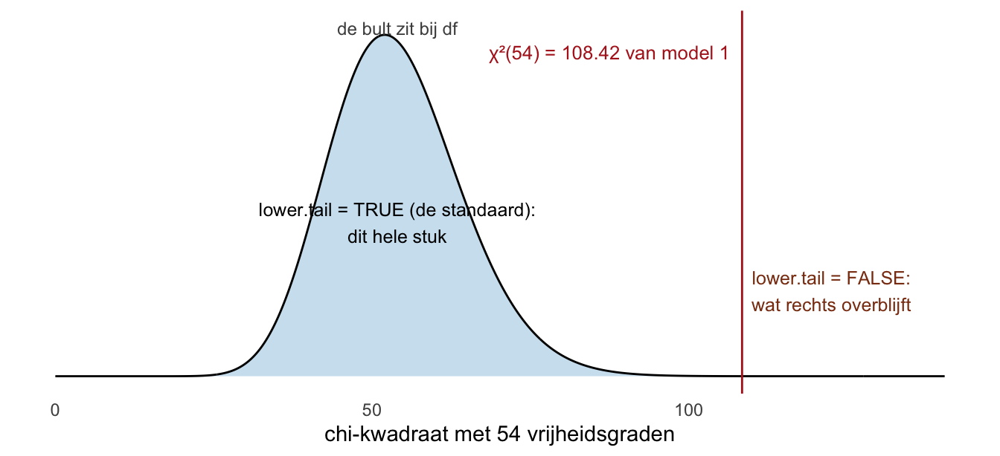
TipDe routine — vóór je iets vindt
- Schrijf en op. Bij model-fit: is het model past.
- Lees de -waarde af en beslis: verwerpen of niet.
- Interpreteer pas daarná.
“Ga niet denken over wat wil jij. Nee, het is gewoon wat zegt de H0, wat zegt de H1 en wat moet ik beslissen?” Wie eerst gaat wensen, leest de -waarde verkeerd om. En zeg nooit “H1 is waarschijnlijk”: je verwerpt , en je zegt wat dat betekent — de data passen slecht bij dit model.
De fit-maten: goodness en badness
is een toets, met een -waarde en dus een beslissing. Daarnaast zijn er fit-maten — je college noemt ze beschrijvende fitmaten, omdat ze beschrijven in hoeverre de data met het model overeenkomen: een getal, een grenswaarde, en verder niets. “Bij die fitmaten had je geen p-waarde. Dat is gewoon op grenswaarde beslissen.” Een fit-maat is geen toets, en doet ook niet alsof. Zo staat het ook in de theorietekst van de opleiding — het cursusmateriaal naast dit oefenboek, niet dit hoofdstuk: die zet achter zijn opsomming van de maten met zoveel woorden dat het geen toetsen zijn.
Handiger dan de namen is een indeling in twee soorten. Bij een goodness of fit is hoger beter; bij een badness of fit is hoger juist slechter, en kijk je dus de andere kant op.
En dan de getallen. Je hoorcollege geeft er per maat drie banden, niet één grens — en bij RMSEA blijft er een vakje tussen zitten waar geen naam op staat:
| maat | goed | redelijk | geen etiket | slecht | |
|---|---|---|---|---|---|
| goodness of fit | CFI | – | — | ||
| NFI | – | — | |||
| badness of fit | RMSEA | – | – |
Een streepje in de kolom geen etiket betekent: bij die maat sluiten de banden op elkaar aan, dus daar valt niets tussenin. Alleen RMSEA heeft een gat.
Op de sheets staan de banden in het Engels, en de middelste heeft daar twee namen: adequate bij RMSEA, acceptable bij NFI en CFI. Dat is één vak met twee woorden; hier heet het allebei redelijk. Links en rechts heten good en poor.
Dat lege vakje is echt leeg, en dat moet je weten. De middenband van RMSEA loopt tot en slecht begint pas bij . Wat daartussen ligt krijgt op de sheets geen naam. Dat is niet iets wat jij moet oplossen; het is iets wat je moet herkennen. Kom je een RMSEA van tegen, dan is het eerlijke antwoord: niet meer redelijk, nog niet slecht — en dan leunt je conclusie op de andere twee maten. Noteer het, en doe niet alsof je een grens weet die er niet staat.
Nu ons eigen model. Per maat het getal, en in welke band hij valt:
| De drie fitmaten van model 1 | ||
| maat | model 1 | band |
|---|---|---|
| RMSEA (badness) | .071 | redelijk |
| NFI (goodness) | .877 | slecht |
| CFI (goodness) | .933 | slecht |
twee stemmen voor slecht, en zei ook al nee.
En als de maten het oneens zijn? Dat gebeurt, zoals je hier ziet. Je college geeft daar één regel voor: volg de meerderheid. Dus tel, en ga met de meeste mee — hier is de uitkomst slecht.
Drie dingen die je bij dat tellen moet weten, want ze staan niet op de sheet:
- Je telt alleen de drie maten. De -toets doet niet mee in de telling. Die heeft zijn eigen beslissing, op een -waarde, en die rapporteer je apart. Anders zou je een toets en drie vuistregels in één stapeltje gooien.
- Soms is er geen meerderheid. Drie maten in drie verschillende banden — goed, redelijk, slecht — geeft niets om mee te gaan. Dan verzin je er geen: je schrijft op dát de maten het oneens zijn, en de -toets en de residuen doen het werk.
- Tellen is beslissen, niet rapporteren. Wat je opschrijft is alles: de toets en alle drie de maten, ook de maat die iets anders zei. Dat ze het oneens waren is zelf een resultaat, en dat poets je niet weg door alleen de meerderheid te noemen.
Waar deze banden vandaan komen. Van het hoorcollege van 2026-27, één op één overgenomen. Er is nog een tweede bron in de cursus, en die legt dezelfde strepen maar trekt er maar één: het uitgewerkte oefententamen van de opleiding noemt NFI , CFI en RMSEA als eis voor een goede fit. Leg die drie getallen naast de tabel hierboven en je ziet dat het precies de ondergrens is — de streep tussen slecht en de rest.
Let wel op het woord, want daar zit het enige verschil. Het oefententamen kent twee vakken, goed en niet goed, en noemt alles boven die streep goed. De sheets knippen dat bovenste vak nog een keer doormidden in redelijk en goed. Een NFI van heet op het oefententamen dus goed en hier redelijk, en dat is geen tegenspraak maar een fijnere verdeling van hetzelfde. Rapporteer daarom het getal en niet alleen het woord — dan kan niemand zich vergissen in welke indeling je gebruikte. Vraagt een tentamenvraag om één woord, gebruik dan de indeling die de vraag zelf aanreikt.
Drie maten, en dat is het hele rijtje: ook het practicum van de opleiding vraagt in week 5 precies deze drie op bij fitMeasures(). (lavaan drukt er in summary() nog een paar méér af. Die tellen hier niet mee; welke dat zijn en waarom, staat in het terzijde hieronder.) De literatuur legt de lat nog weer anders, en ook dat staat daar.
Deze getallen komen dus niet uit iemands geheugen maar uit het materiaal van de opleiding zelf. Eén gewoonte houd je er toch bij: grenswaarden kúnnen worden bijgesteld, en als dat gebeurt zie je het het eerst op de collegesheets. Loop ze daar vóór je tentamen even langs — niet omdat je iets anders verwacht, maar omdat je dan weet wáár je zou kijken.
OpmerkingTerzijde — de grenzen uit de literatuur
Dit is niet de regel waarop je getoetst wordt. De grenzen hierboven zijn die van de cursus; wat hieronder staat is waar de vakliteratuur ze legt. Dat is niet overal strenger — de bovenste band van je college is zelfs strenger dan de bekendste lat uit de literatuur — maar wel anders verdeeld. Ken het verschil, en reken op het tentamen met de cursus.
De bekendste lat is die van Hu en Bentler (1999): CFI in de buurt van of hoger, RMSEA in de buurt van of lager, voor wat zij een redelijk goede fit noemen. Eén lat, zonder tweede trede voor acceptabel. De oudere, mildere grens van gaat terug op Bentler en Bonett (1980), die de NFI invoerden en schreven dat een model onder de in hun ervaring meestal nog flink te verbeteren is — en Hu en Bentler lieten juist zien dat te veel verkeerde modellen doorlaat. De drie RMSEA-strepen van je college, , en , komen van Browne en Cudeck (1993); het vak van tot dat op de sheets geen naam heeft, heet bij MacCallum et al. (1996) matig mediocre. Hu en Bentler kwamen aan hun getallen met simulaties op één soort model, en schreven zelf dat één grens per maat lastig te geven is, omdat een maat niet onder alle omstandigheden even goed werkt. Rapporteer dus het getal: “CFI = .933” — dat van model 1 hierboven — is informatie, “de fit was acceptabel” is een mening.
En nog een naam die je tegenkomt: NNFI, dezelfde maat als wat lavaan TLI noemt (Tucker–Lewis index). Hij rolt uit summary() gewoon mee. Ken hem van naam, maar tel hem niet mee als vierde criterium — de cursus toetst op , NFI, CFI en RMSEA.
De residuen: wáár gaat het mis?
Toets en maten zeggen dat het niet past. Nu willen we weten waar. Daarvoor is de residuenmatrix, en lavaan rekent hem uit met residuals() — met type = "cor", zodat hij op correlatieschaal staat:
round(residuals(fit_1, type = "cor")$cov, 2) p1 p2 p3 p4 a1 a2 a3 a4 u1 u2 u3 u4
p1 0.00
p2 0.00 0.00
p3 0.01 0.00 0.00
p4 0.00 0.00 0.00 0.00
a1 0.25 0.27 0.23 0.25 0.00
a2 0.12 0.17 0.17 0.23 0.01 0.00
a3 0.35 0.27 0.24 0.29 -0.02 0.01 0.00
a4 0.25 0.31 0.27 0.33 0.01 -0.03 0.01 0.00
u1 0.11 0.07 0.11 0.12 0.26 0.29 0.31 0.29 0.00
u2 0.17 0.12 0.12 0.20 0.28 0.31 0.37 0.25 -0.01 0.00
u3 0.09 0.08 0.09 0.17 0.18 0.21 0.20 0.17 0.00 0.01 0.00
u4 0.10 0.11 0.13 0.20 0.23 0.23 0.28 0.23 0.01 0.00 -0.01 0.00Zoek eerst zelf. Waar staan de grote getallen — verspreid, of bij elkaar? En wat is hun teken?
Toon code (residuen als tegels)
teken_residuen <- function(r, titel = NULL) {
as.data.frame(as.table(r)) |>
setNames(c("rij", "kol", "res")) |>
mutate(rij = as.character(rij), kol = as.character(kol),
ri = match(rij, items), ki = match(kol, items)) |>
filter(ri > ki) |>
ggplot(aes(ki, -ri, fill = res)) +
geom_tile(colour = "white", linewidth = 0.6) +
geom_text(aes(label = res(res, 2)), size = 2.8) +
scale_fill_gradient2(low = "#b2182b", mid = "white", high = "#2166ac",
midpoint = 0, limits = c(-.4, .4), name = "residu") +
scale_x_continuous(breaks = 1:k, labels = items, position = "top", expand = c(0, 0)) +
scale_y_continuous(breaks = -(1:k), labels = items, expand = c(0, 0)) +
coord_fixed() +
labs(x = NULL, y = NULL, title = titel) +
theme_minimal(base_size = 11) +
theme(panel.grid = element_blank(), legend.position = "bottom")
}
teken_residuen(res_1)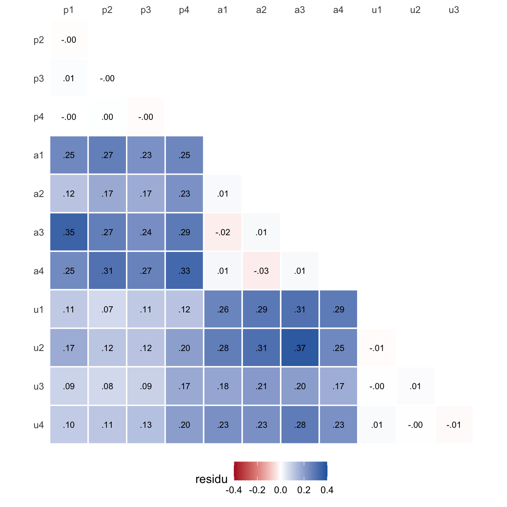
OpmerkingWat je in deze figuur ziet
Binnen de blokken is het wit. Piekeren met piekeren, alertheid met alertheid: residuen van hooguit een paar honderdsten. Daar klopt het model.
Tussen de blokken is het blauw, en niet zuinig. Piekeren tegen alertheid: 16 van de 16 residuen positief, gemiddeld . Alertheid tegen uitstelgedrag: 16 van de 16, gemiddeld . Piekeren tegen uitstelgedrag: 16 van de 16, gemiddeld — het zwakste van de drie, maar nog steeds allemaal dezelfde kant op.
En ze zijn hier makkelijk te lezen. Het model beloofde in die cellen een nul. Waargenomen min nul is gewoon waargenomen: elk getal in zo’n blok ís de correlatie die de das niet had zien aankomen.
Een heel blok positieve residuen tussen de items van twee factoren betekent één ding: die twee factoren hangen wél samen, en het model ontkent dat. Het model zat te laag — het onderschat elke correlatie tussen die twee groepen tegelijk.
“Maar wat denk je zelf? Wij zijn natuurlijk geen naïeve psychologen.” Piekeren en uitstelgedrag hangen samen; dat wist je in thema 4 al, toen de componenten onder oblimin bleken te correleren. De das ook, eigenlijk. Dus hij geeft één ding toe.
De das geeft één ding toe: drie dubbele pijlen
college-stap 5 · herspecificatie
Model 2, en hoeveel het scheelt
Voorspel weer eerst. De das tekent drie dubbele pijlen bij, tussen elk paar factoren. Wat gebeurt er met ? Met ? En wordt de groter of kleiner? Schrijf je drie antwoorden op.
model_2 <- '
piekeren =~ p1 + p2 + p3 + p4
alertheid =~ a1 + a2 + a3 + a4
uitstelgedrag =~ u1 + u2 + u3 + u4
'
fit_2 <- cfa(model_2, data = bos_dieren_dimensies, std.lv = TRUE)
fitMeasures(fit_2, c("npar", "chisq", "df", "pvalue", "nfi", "cfi", "rmsea")) npar chisq df pvalue nfi cfi rmsea
27.000 38.362 51.000 0.904 0.956 1.000 0.000 Drie pijlen erbij: gaat van 24 naar 27, van 54 naar 51. Erbij bij , eraf bij — “bedenk wel even, gaat het er nou juist bij of gaat het er vanaf? Want het was V min p, hè? Dat is best verwarrend allemaal.” En de zakt van naar .
: model 2 past. , p = .90. Niet significant, dus blijft staan: de data zeggen geen nee tegen dit model. RMSEA (goed), NFI (goed), CFI (goed) — alle drie in de bovenste band van de sheets, en ook binnen de grenzen uit de literatuur. Vier op vier, en niets om een meerderheid over te tellen.
Let wel op wat je daarmee koopt. De data kunnen “hmmm” zeggen of “nee”, maar nooit “ja”: een model dat niet verworpen wordt is verenigbaar met de data, en er zijn altijd andere modellen die dat óók zijn. Een model kan worden weerlegd, niet bewezen.
OpmerkingTerzijde — RMSEA staat op precies nul, en dat is geen perfectie
RMSEA rekent met min zijn . Is de kleiner dan zijn vrijheidsgraden — hier tegen — dan wordt dat negatief, en dan kapt de formule af op nul. Een RMSEA van betekent dus niet het model klopt exact, maar het wijkt minder af dan je bij toeval al zou verwachten. Bij een goed passend model komt dat gewoon voor.
De weg: vier modellen op één lijn
Teken dit als een weg — dat beeld is waar de rest van dit thema aan hangt.
“Denk even aan Den Haag. We hebben de stad Leiden. En we hebben de stad Amsterdam. Alsof ze op één weg aan elkaar liggen.” Den Haag is de data. Leiden is ons model — model 2. En Amsterdam is het nulmodel: het allerslechtste model ter wereld. Model 1, het naïeve, ligt ergens onderweg tussen Leiden en Amsterdam. De afstand tot Den Haag is de : hoe kleiner, hoe beter het past.
Wat is dat nulmodel? Denk gewoon: gemiddelde. “Wij hebben twaalf items. Dus het nulmodel voor die twaalf items is gewoon die twaalf gemiddelden.” Geen verbanden, alles is error: twaalf vierkantjes met alleen hun errorpijl. Tel: , dus . In de uitvoer heet dit baseline.
Toon code (de weg)
weg <- data.frame(
x = c(0, 1, 2, 3),
naam = c("de data", "model 2\n(de das geeft toe)", "model 1\n(de das, naïef)", "het nulmodel"),
chi = c(0, fm2$chisq, fm1$chisq, fm2$baseline.chisq),
df = c(NA, fm2$df, fm1$df, fm2$baseline.df))
# Elke boog is een halve ellips met een BEKENDE top, en daar staat zijn getal,
# in een wit label. Tot 25-9-2026 tekende annotate("curve") de bogen en stond
# het label op halve hoogte -- het getal van het nulmodel lag daardoor op de
# boog van model 1, en alleen de kleur (oranje tegen bruin) zei dat het daar
# niet hoorde. Testlezer Beeldverteller ving dat. Nu ligt de top vast.
boog <- function(a, b, h, kleur, txt) {
t <- seq(0, pi, length.out = 80)
pad <- data.frame(x = (a + b) / 2 + (b - a) / 2 * cos(t), y = h * sin(t))
list(geom_path(data = pad, aes(x, y), colour = kleur, linewidth = 0.7),
# `linewidth = 0` haalt het randje om het witte labelvlak weg. Tot
# 27-9-2026 stond hier `label.size = 0`; die naam is sinds ggplot2 3.5
# vervangen door `linewidth`, en een onbekende parameter wordt
# genegeerd -- met een waarschuwing die niemand zag, want de
# waarschuwingentoets kon thema 5 tot vandaag niet meten. Het randje
# stond er dus gewoon nog omheen.
annotate("label", x = (a + b) / 2, y = h, label = txt, colour = kleur,
size = 3.4, fill = "white", linewidth = 0))
}
ggplot(weg, aes(x, 0)) +
geom_hline(yintercept = 0, colour = "grey60") +
geom_point(size = 4) +
geom_text(aes(label = naam), vjust = 1.6, size = 3.3, lineheight = 0.9) +
boog(0, 1, 0.30, "#1b6ca8", sprintf("χ²(%d) = %s", fm2$df, fmt_b(fm2$chisq))) +
boog(0, 2, 0.55, "#c47a10", sprintf("χ²(%d) = %s", fm1$df, fmt_b(fm1$chisq))) +
boog(0, 3, 0.85, "#8a3b12", sprintf("χ²(%d) = %s", fm2$baseline.df, fmt_b(fm2$baseline.chisq))) +
boog(1, 2, -0.40, "#1a7f37", sprintf("Δχ²(%d) = %s", d_12_df, fmt_b(d_12_print))) +
scale_x_continuous(limits = c(-0.3, 3.3)) +
scale_y_continuous(limits = c(-0.6, 0.98)) +
labs(x = "afstand tot de data — niet op schaal", y = NULL) +
theme_minimal(base_size = 11) +
theme(axis.text = element_blank(), panel.grid = element_blank())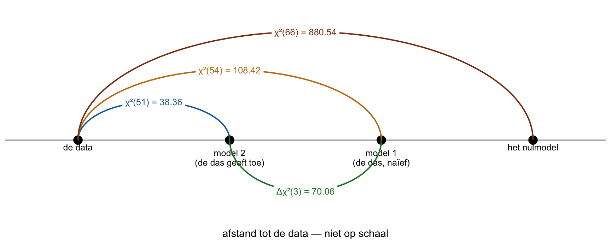
OpmerkingWat je in deze figuur ziet
De data staan links, en elk model heeft een afstand ernaartoe. Die afstand is zijn . Model 2 staat het dichtst bij: . Model 1 verder: . Het nulmodel helemaal rechts: — op schaal getekend zou het 23 keer zo ver van de data liggen als model 2.
De afstand tussen twee modellen is het verschil van hun afstanden tot de data. Weet je hoe ver het van Den Haag naar Leiden is, en hoe ver van Den Haag naar Amsterdam, dan weet je ook hoe ver het van Leiden naar Amsterdam is: aftrekken. Hier: van model 1 naar model 2 is , de groene boog.
Een complexer model staat altijd dichter bij de data. Pijlen erbij maakt de fit altijd beter — “of het significant beter is, is een ander verhaal.”
Δχ² — is model 2 écht beter dan model 1?
Twee vragen die op elkaar lijken en het niet zijn. Je college geeft ze allebei een naam, en die namen kun je op je tentamen tegenkomen:
| vraagt | waarmee | |
|---|---|---|
| modeltoets | past dít ene model bij de data? | de uit de evaluatie |
| effecttoets | past het ene model beter dan het andere? | het verschil van twee chi-kwadraten |
De modeltoets heb je nu twee keer gedaan: één keer op model 1 (afgewezen) en één keer op model 2 (niet afgewezen). Wat hieronder komt is de effecttoets. En let op de vangrail die daarbij hoort en niet bij de modeltoets: een effecttoets mag alleen als de twee modellen genest zijn. Wat dat betekent, staat verderop; hier zijn ze dat, want er zijn alleen pijlen bij gekomen.
Gok eerst. Drie pijlen erbij en de zakt met . Is dat veel voor drie pijlen? Hier is je maat, en je hebt hem al gezien: als er niets aan de hand is, zit de bult van een bij zijn eigen vrijheidsgraden. Drie pijlen die níéts doen, zouden de dus met ongeveer laten zakken. Vergelijk daarmee.
Twee modellen, en de vraag of het ingewikkelde er echt iets bij wint. Weer hypothesen, en weer zegt geen verschil:
De toetswaarde is de afstand tussen de twee: het verschil van hun chi-kwadraten, met als vrijheidsgraden het verschil van hun . “Altijd groot min klein.”
Precies drie, want er zijn precies drie pijlen bijgekomen. En dan de -waarde. Vraag je een groep studenten wat je hiervoor in R typt, dan komt er bijna altijd eerst dit:
pchisq(70.06, df = 3)[1] 1“Heeft hij 1? Dan hebben we een probleem.” Want dit klopt niet. Kijk terug naar de staart-tekening van de chi-kwadraat: R geeft je hier de kans op een kleinere waarde — het hele blauwe stuk links van je streep, en bij een grote is dat vrolijk alles. Jij wilt wat er rechts overblijft. “By default staat hij dus op lower. Maar je wil upper.” Dus een derde argument erbij:
pchisq(70.06, df = 3, lower.tail = FALSE)[1] 4.143914e-15Dat lower.tail = FALSE is niet optioneel; vergeet je het, dan denk je dat er niets is terwijl er alles is. En wat komt eruit? . R schrijft dat in wetenschappelijke notatie, en daar kijk je zo overheen. Schrijf hem eens uit: dat is
met 14 nullen achter de komma voordat er iets komt. “Dus het is gewoon 0.” Knijtersignificant. We verwerpen : model 2 verschilt echt van model 1.
En dan één stapje dat je zelf moet zetten, want de toets zegt alleen verschillend en niet beter. Denk terug aan de weg: een model met meer pijlen ligt altijd dichter bij de data — pijlen erbij kan de fit nooit slechter maken. Van twee geneste modellen staat het complexere dus per definitie voor of gelijk. Verschillen ze significant, dan kan dat maar één kant op zijn, en daarom betekent verschilt hier is beter. Die drie dubbele pijlen doen iets. Of tenminste één van de drie; welke, dat zegt deze toets niet.
En zonder R? Op je tentamen heb je geen console, en dat hoeft ook niet: je hebt aan één opgezochte grens genoeg.
Zo doet het college het. Zoek in een chi-kwadraattabel bij jouw de kritieke waarde, en kijk of je toetswaarde erboven ligt. Ligt hij erboven, dan is het significant; ligt hij eronder, dan niet. Meer hoef je niet te doen.
Bij is die grens . Onze van ligt daar ruim boven, dus significant — dezelfde beslissing als hierboven. (Zo’n tabel heeft meestal meer kolommen: de grens voor p < .001 ligt bij deze op , en ook daar zitten we overheen.)
Het verschil tussen de twee routes is dus alleen wat je overhoudt: de tabel geeft je een ja of nee, pchisq() geeft je er de -waarde bij.
(Reken je met de ongeronde chi-kwadraten, zoals anova() verderop doet, dan kom je op en een net iets andere -waarde. Dat is afronding, geen verschil.)
OpmerkingTwee soorten maten, één weg
Nu zie je waar de fit-maten vandaan komen, want ze staan gewoon op dezelfde weg.
NFI vergelijkt jouw afstand met die van het nulmodel: hoeveel van die hele afstand heb je weggewerkt?
Precies het getal uit de uitvoer. Model 1 haalt zo : minder weggewerkt, want hij staat verder van de data.
CFI doet hetzelfde, maar trekt van beide chi-kwadraten eerst hun vrijheidsgraden af — een wordt vanzelf al zo groot als zijn , ook als het model klopt, en dat stuk telt CFI niet als misfit. Daardoor ligt CFI bijna altijd iets boven NFI.
RMSEA kijkt niet naar het nulmodel maar alleen naar jouw eigen afstand: de min zijn , en dat gedeeld door en door de steekproefgrootte. Nul is perfect; daarom is het een badness-maat.
En dan zie je ook waarom een toetsmaat en een fit-maat het oneens kunnen zijn. groeit mee met het aantal dieren: twee keer zoveel dieren, ongeveer twee keer zo’n grote , bij precies dezelfde tekening. NFI is een verhouding van twee afstanden die allebei even hard meegroeien, en die verhouding blijft staan — op is hetzelfde als op . CFI en RMSEA trekken eerst de af, en die groeit níét mee. Neem een van : bij een van blijft er na aftrekken over, bij een van blijft er over. Bij weinig dieren hakt de aftrekking er dus een groot stuk af, bij veel dieren bijna niets. Daardoor schuiven CFI en RMSEA wél, en bij een kleine steekproef ziet een model er bij die twee mooier uit dan bij een grote. In opgave E6 aan het eind laat je dat zelf gebeuren: daar staat NFI bij elke steekproefgrootte op , terwijl CFI van naar zakt en RMSEA van naar oploopt. Bij een grote steekproef zegt daarom vaak nee tegen een model waarvan de maten zeggen dat het maar een beetje afwijkt.
OpmerkingVoorlopig — sheet 27 en 31 naast dit oefenboek
Leg je sheet 27 of 31 van je college naast dit oefenboek, dan kom je een paar getallen tegen die niet kloppen met wat je zelf uitrekent. Dan heb jij goed gerekend. Daarom dit kader; het is voorlopig, en het gaat eruit zodra de sheets zijn bijgewerkt. Op je tentamen reken je gewoon met de getallen die in de vraag staan.
De begrippen, de regels en de conclusies op beide sheets kloppen. Het gaat alleen om de voorbeelduitvoer.
Sheet 27. Daar staat , p < .001. Reken die p na zoals bij : pchisq(19.87, 9, lower.tail = FALSE) geeft p = .019. Nog steeds onder .05, dus het model wordt verworpen — precies wat de sheet concludeert.
Sheet 31. Daar staat , en die is kleiner dan zijn — onthoud dat even, want twee getallen hieronder volgen daar rechtstreeks uit. Van de zeven getallen in de uitvoerregel onder aan die sheet kloppen en ; de andere vijf passen niet bij de rest van de sheet:
| De uitvoerregel van sheet 31, en wat er bij zijn eigen chi-kwadraat hoort | ||
| maat | op de sheet | hoort erbij |
|---|---|---|
| npar | 11 | 13 |
| p | .326 | .45 |
| NFI | 1.000 | .958 |
| CFI | .961 | 1.000 |
| RMSEA | .002 | .000 |
| Note. Chi-kwadraat en df van de sheet passen bij elkaar en bij de tekening, en staan daarom niet in de tabel. npar = aantal parameters. De sheetkolom staat zoals op de sheet, op drie decimalen; in de rechterkolom staat de p op twee, zoals elke p boven .10 in dit hoofdstuk. | ||
Het oordeel van de sheet, goede fit, blijft overeind. Met de getallen uit de rechterkolom zelfs iets ruimer: de CFI van de sheet, , valt in de middelste band van sheet 26 ( tot , redelijk), en in de bovenste. Dan zeggen alle drie de maten goed.
Waar de getallen in de rechterkolom vandaan komen:
- CFI en RMSEA. Allebei rekenen ze met min , en dat verschil wordt afgekapt op nul. Hier is dat , en dat wordt . Dan is CFI precies en RMSEA precies .
- p.
pchisq(7.85, 8, lower.tail = FALSE)geeft p = .45. - npar. Met zes items heb je vakjes. Tel de pijlen, met de factoren op : zes errors, zes ladingen en één dubbele pijl zijn 13 parameters. En , precies de van de sheet. Tel je zoals de sheets, met de eerste lading per factor vast op , dan zijn er vier ladingen vrij, maar komen de twee factorvarianties erbij: weer 13. Vergeet je die twee — ze staan niet als pijl op de tekening — dan kom je op 11.
- NFI. Die is alleen als zelf nul is, en dat is hij niet. Het lijkt misschien alsof NFI en CFI op de sheet van plek zijn gewisseld; dan klopt CFI wel, maar NFI zit er nog steeds naast: tegen .
Dit laatste hoeft niet voor je tentamen, maar het kan: die is terug te rekenen. Sheet 27 en 31 rekenen op dezelfde data, dus ze delen hun nulmodel. NFI zegt hoeveel van de afstand van dat nulmodel een model heeft weggewerkt: sheet 27 werkt er van weg en houdt over. Dan weet je hoe lang de hele afstand was, en wat sheet 31 ervan overhoudt:
Die van sheet 27 mag je hier gebruiken: met dat nulmodel komt ook de CFI van die sheet, , precies uit. Alleen de p van sheet 27 klopt niet.
OpmerkingVerdieping — wat een afgedrukte chi-kwadraat verklapt over zijn steekproef
Dit hoeft niet voor je tentamen. Het is er voor één ding: dat je je eigen R meer gaat vertrouwen dan een getal dat al gedrukt staat.
In het kader Twee soorten maten, één weg las je dat de meegroeit met het aantal dieren. Bij dezelfde matrix gaat dat precies: de is het aantal dieren keer een vast getal. Dat vaste getal is de afstand per dier — de afstand tussen de matrix en het model, gedeeld door het aantal dieren, zoals een gemiddelde. Het is dus geen eigenschap van één dier, en het hangt zelf niet van het aantal dieren af. In lavaan en in de boeken heet het de fitfunctie. Meet je andere dieren, dan heb je een andere matrix, en een andere afstand per dier.
Bij ons eerste model is die afstand per dier 0.5448. Er zit één kuil in, en wij zijn er zelf in gevallen: deel door het aantal dieren waar de op rust, niet door het aantal rijen in je data. Eén dier heeft p3 niet ingevuld, en lavaan liet het weg — dat zag je bij het eerste model al. De van rust dus op 199 dieren, en geeft 0.5448. Geef je lavaan de matrix in plaats van de ruwe data, dan weet hij niet dat er een dier ontbrak, en moet jij hem met sample.nobs zeggen op hoeveel dieren die matrix rust. Zeg je 199, dan krijg je precies terug; zeg je 200, dan .
En daarmee kun je iets controleren wat je normaal moet geloven. Een verzonnen voorbeeld, op onze eigen bosdieren: stel dat je ergens leest twaalf items, drie factoren zonder samenhang, , . Fit het zelf bij 199 dieren en je krijgt iets heel anders. Deel dat afgedrukte getal dan door je eigen afstand per dier, en je weet bij welke het wél hoort:
R_bos <- cor(bos_dieren_dimensies[, items], use = "complete.obs")
chi_bij <- function(n) {
f <- cfa(model_1, sample.cov = R_bos, sample.nobs = n, std.lv = TRUE)
as.numeric(fitMeasures(f, "chisq"))
}
chi_bij(199) # wat JIJ krijgt bij de 199 dieren van de matrix[1] 108.4157afstand_per_dier <- chi_bij(199) / 199
afstand_per_dier[1] 0.5448025544.80 / afstand_per_dier # en waar hoort het afgedrukte getal dan bij?[1] 999.99541000 dus — niet helemaal rond, want dat afgedrukte getal was zelf al op twee decimalen afgerond, en die afronding komt er bij het delen weer uit. Die uitvoer is dus niet bij 199 dieren gemaakt maar bij 1000, en dat verklaart meteen waarom de er ongeveer vijf keer zo groot uitzag. Zoiets gebeurt: een voorbeeld leeft jaren mee, de matrix blijft staan, het zinnetje eromheen verschuift.
Staat er in een voorbeeld een die je niet terugkrijgt, kijk dan eerst naar de N.
En dan die kuil van hierboven, nu je weet waarvoor je hem nodig hebt: deel je de door 200 in plaats van door 199, dan komt je terugrekening op 1005 uit in plaats van 1000 — en dat is geen afronding meer. Voor de vraag 199 of 1000 maakt het niets uit; wil je het precieze getal, dan wel.
Dat is de hele les van deze verdieping: als je het kunt narekenen, reken het na. Niet om iemand te betrappen, maar omdat je dan weet wat je opschrijft. Een getal dat je zelf hebt zien ontstaan, weet je; een getal dat je hebt overgetikt, hoop je.
OpmerkingTerugblik op thema 4 — je kent dat nulmodel al
Bartlett’s toets in thema 4 toetste of de correlatiematrix van een identiteitsmatrix verschilde: alleen enen op de diagonaal, nullen daarbuiten. Geen enkel item hangt met een ander samen. Dat is hetzelfde model als het nulmodel hier, met dezelfde vrijheidsgraden. Het verschil zit in wat je hoopte: bij Bartlett wilde je die verwerpen (er moet iets te vinden zijn), en bij je eigen model hoop je dat blijft staan.
Genest — wanneer mag je twee modellen vergelijken?
Kijk naar de tekening van model 1 en de drie regels van model 2. Kun je van de ene naar de andere komen door alléén pijlen bij te tekenen, zonder er één weg te halen? Ja: drie dubbele pijlen erbij en je hebt model 2. Dan zijn ze genest, en alleen dan mag de effecttoets — alleen dan zegt iets.
“Wanneer is een vogeltje lekker genest? Als hij er niet doorheen pleurt.” Hieronder staat een tak met drie takjes, en daaroverheen, dunner, dezelfde tak met twee:
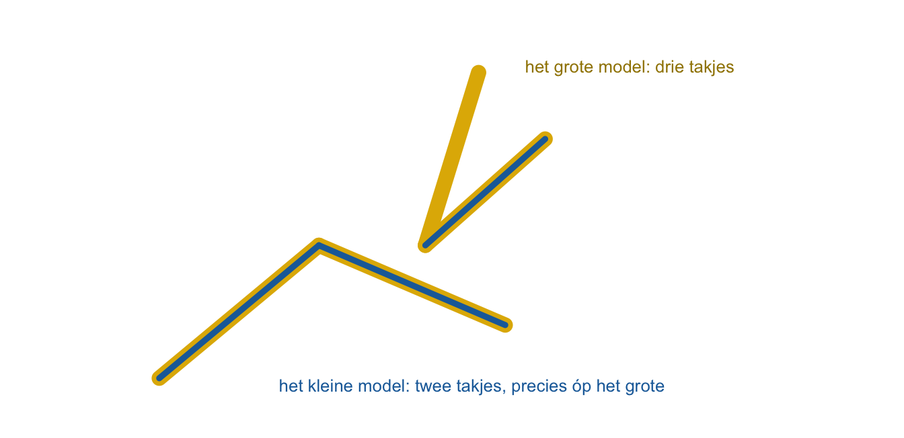
Het kleine model zit in het grote: het grote heeft alles wat het kleine heeft, plus een takje extra. “Een nestje kan zich niet nesten in een vogel. Maar een vogeltje kan wel genest zijn in een nestje.” Strikt genomen is het kleine model genest binnen het grote.
De praktische regel: begin bij één van de twee en kijk of je naar de andere komt door alleen toe te voegen. Lukt het niet, doe het dan ook andersom. Moet je in beide richtingen zowel toevoegen áls weghalen, dan zijn ze niet genest en zegt het verschil van hun chi-kwadraten niets. “Zit zeker in het tentamen. Het is gewoon een weggevertje. Even goed kijken, dubbel kijken, heen en terug.”
In lavaan doet anova() de verschiltoets voor je — en die controleert niet of je modellen genest zijn. Dat blijft jouw werk:
anova(fit_1, fit_2)
Chi-Squared Difference Test
Df AIC BIC Chisq Chisq diff RMSEA Df diff Pr(>Chisq)
fit_2 51 5997.1 6086.0 38.362
fit_1 54 6061.1 6140.2 108.416 70.054 0.33514 3 4.156e-15 ***
---
Signif. codes: 0 '***' 0.001 '**' 0.01 '*' 0.05 '.' 0.1 ' ' 1De pijlen zelf: een lading is een regressiegewicht
college-stap 3 · parameters schatten (hier: lezen)
Wat er op elke pijl staat
Kijk eens naar het labeltje onder het kopje: we gingen van college-stap 4 naar 5, en nu terug naar 3. Dat is geen slordigheid. De vijf stappen van je college zijn geen rij maar een rondje — een cyclus — en dit hoofdstuk loopt dat rondje langs, met het schatten op de plek waar jij het nodig hebt. Dat is precies het rondje dat aan het begin van dit hoofdstuk staat getekend.
Want R en jij doen het in een andere volgorde, en dat is geen toeval:
- R schat eerst alle parameters, en rekent daarna pas de fit uit. Dat moet ook wel: zonder schattingen valt er niets te vergelijken.
- Jij kijkt eerst of het model past, en pas als het antwoord ja is, kijk je wat er op de pijlen staat.
Waarom die volgorde ertoe doet: past het model niet, dan zijn de ladingen zinloos om te interpreteren. Ze staan er wel — R drukt ze gewoon af — maar het zijn de beste schattingen bij een tekening waarvan de data net gezegd hebben dat hij niet klopt. Een mooie lading in een afgewezen model is een net getal op een verkeerde plek. Daarom komen de pijlen van model 1 in dit hoofdstuk niet aan bod en die van model 2 wel.
Kijk naar de uitvoer hieronder en zoek de lading van p1 op piekeren. Je vindt hem drie keer, op één regel. Welke van de drie zou je rapporteren?
summary(fit_2, standardized = TRUE)lavaan 0.7-2 ended normally after 17 iterations
Estimator ML
Optimization method NLMINB
Number of model parameters 27
Used Total
Number of observations 199 200
Model Test User Model:
Test statistic 38.362
Degrees of freedom 51
P-value (Chi-square) 0.904
Parameter Estimates:
Standard errors Standard
Information Expected
Information saturated (h1) model Structured
Latent Variables:
Estimate Std.Err z-value P(>|z|) Std.lv Std.all
piekeren =~
p1 0.737 0.068 10.880 0.000 0.737 0.730
p2 0.744 0.066 11.321 0.000 0.744 0.753
p3 0.661 0.070 9.504 0.000 0.661 0.656
p4 0.765 0.068 11.207 0.000 0.765 0.747
alertheid =~
a1 0.726 0.070 10.427 0.000 0.726 0.706
a2 0.661 0.065 10.248 0.000 0.661 0.697
a3 0.754 0.068 11.170 0.000 0.754 0.745
a4 0.741 0.072 10.327 0.000 0.741 0.701
uitstelgedrag =~
u1 0.747 0.071 10.552 0.000 0.747 0.706
u2 0.770 0.062 12.509 0.000 0.770 0.804
u3 0.672 0.065 10.399 0.000 0.672 0.698
u4 0.718 0.064 11.159 0.000 0.718 0.737
Covariances:
Estimate Std.Err z-value P(>|z|) Std.lv Std.all
piekeren ~~
alertheid 0.491 0.071 6.926 0.000 0.491 0.491
uitstelgedrag 0.237 0.082 2.888 0.004 0.237 0.237
alertheid ~~
uitstelgedrag 0.497 0.070 7.135 0.000 0.497 0.497
Variances:
Estimate Std.Err z-value P(>|z|) Std.lv Std.all
.p1 0.477 0.064 7.456 0.000 0.477 0.467
.p2 0.423 0.060 7.077 0.000 0.423 0.433
.p3 0.578 0.069 8.326 0.000 0.578 0.569
.p4 0.464 0.065 7.181 0.000 0.464 0.442
.a1 0.529 0.068 7.775 0.000 0.529 0.501
.a2 0.463 0.059 7.892 0.000 0.463 0.514
.a3 0.456 0.063 7.211 0.000 0.456 0.445
.a4 0.569 0.073 7.841 0.000 0.569 0.509
.u1 0.561 0.070 7.991 0.000 0.561 0.501
.u2 0.324 0.051 6.316 0.000 0.324 0.354
.u3 0.475 0.059 8.080 0.000 0.475 0.512
.u4 0.434 0.057 7.581 0.000 0.434 0.457
piekeren 1.000 1.000 1.000
alertheid 1.000 1.000 1.000
uitstelgedrag 1.000 1.000 1.000(De fit-maten laat deze summary() weg; die had je al met fitMeasures(). Wil je alles in één keer, zet er dan fit.measures = TRUE bij.)
OpmerkingDrie kolommen met schattingen — welke lees je?
| kolom | wat erin staat |
|---|---|
Estimate |
de ruwe lading, in de eenheden van het item. Omdat wij de factoren op variantie hebben gezet, is dit bij ons hetzelfde als Std.lv — en alleen daarom; zie de tabel met de twee schaalafspraken hieronder. |
Std.lv |
de lading nadat alleen de factor is gestandaardiseerd. |
Std.all |
de lading nadat factor én item zijn gestandaardiseerd. Dit is de die je rapporteert, en die je mag lezen als een correlatie tussen item en factor. |
Bij ons gingen ruwe scores in, dus Std.all verschilt van de andere twee. Ging er een correlatiematrix in — zoals in het practicum van de cursus — dan liggen ze alle drie vlak bij elkaar, en “maakt het geen fuck uit” waar je kijkt. Precies gelijk zijn ze dan wel niet. Met de correlatiematrix van onze 199 dieren erin krijgt p1 0.728, 0.728 en 0.730. Zie je bij een correlatiematrix zo’n verschil in de derde decimaal, dan is dat geen rekenfout van jou. Waar het vandaan komt, staat in het terzijde onder dit kader. De regel is dus simpel: lees Std.all, dan zit je altijd goed. Bij p1 staat daar met ruwe scores en met een correlatiematrix hetzelfde getal: 0.730.
De uitvoer op je collegesheets is gemaakt met de andere schaalafspraak: niet de factor op variantie , maar de eerste lading van elke factor vast op (de twee afspraken staan in het ingeklapte kader Waarom “tel de pijlen” alleen klopt als de factoren op 1 staan). Je herkent dat aan een kale 1.000 zonder standaardfout bovenaan elk blok. Op ons eigen model nagerekend, voor p1:
| schaalafspraak | Estimate |
Std.lv |
Std.all |
|---|---|---|---|
| factor op (dit hoofdstuk) | 0.737 | 0.737 | 0.730 |
| eerste lading op (je sheets) | 1.000 | 0.737 | 0.730 |
Alleen Estimate verandert. Die kale 1.000 is geen lading om met andere te vergelijken: hij is vastgezet, en daarom staan er ook geen standaardfout en geen toets naast. Je sheet zet bij Std.lv negeren, omdat je Std.all rapporteert en Std.lv dan niet nodig hebt.
Naast Estimate staan Std.Err, z-value en P(>|z|): de toets of díé ene pijl van nul verschilt. Die horen bij de ruwe lading; de gestandaardiseerde lading heeft zijn eigen standaardfout en , en die vraag je zo op:
sol <- standardizedSolution(fit_2)
sol[sol$op == "=~", c("lhs", "rhs", "est.std", "se", "z", "pvalue")] lhs rhs est.std se z pvalue
1 piekeren p1 0.730 0.044 16.696 0
2 piekeren p2 0.753 0.042 17.924 0
3 piekeren p3 0.656 0.050 13.248 0
4 piekeren p4 0.747 0.042 17.601 0
5 alertheid a1 0.706 0.046 15.492 0
6 alertheid a2 0.697 0.046 15.034 0
7 alertheid a3 0.745 0.043 17.496 0
8 alertheid a4 0.701 0.046 15.236 0
9 uitstelgedrag u1 0.706 0.044 15.911 0
10 uitstelgedrag u2 0.804 0.037 21.822 0
11 uitstelgedrag u3 0.698 0.045 15.506 0
12 uitstelgedrag u4 0.737 0.042 17.612 0Dat is iets anders dan de bovenaan, die over het hele model gaat. Een model kan als geheel goed passen terwijl één pijl niet significant is — en andersom.
OpmerkingTerzijde — waarom de drie kolommen bij een correlatiematrix nét niet gelijk zijn
Dit hoef je niet te kunnen uitleggen; de regel lees Std.all staat ook zonder.
Een correlatiematrix heeft op de diagonaal overal een : elk item hangt precies samen met zichzelf. Zo stop je hem erin, en aan je data verandert niets.
Maar lavaan weet niet dat het een correlatiematrix is. Hij leest hem als een covariantiematrix, uitgerekend zoals een gewone variantie, met onder de streep. Voor zijn eigen rekenwerk wil hij onder de streep, en dus doet hij de hele matrix keer . Bij onze 199 dieren is dat keer , en dat geldt voor elke cel:
| cel | wat jij erin stopt | waar lavaan mee rekent |
|---|---|---|
p1 met zichzelf (de diagonaal) |
1.000 | 0.995 |
p1 met p2 |
0.551 | 0.548 |
Estimate en Std.lv staan op die iets kleinere schaal. Std.all deelt elke lading nog door de standaarddeviatie van het item, en die is voor lavaan nu in plaats van . Delen door iets onder de maakt een getal groter. Bij p1: .
Neem van p1 op piekeren, uit Std.all: . “Zie dit als een factorlading, componentlading. Net zoals bij PCA. Zie het als een regressiegewicht. Een gewichtje wat je toekent.” Hoger op piekeren, hoger op p1. Zo zou je op elke pijl het bijbehorende gewichtje kunnen schrijven:
Toon code (semPaths met schattingen)
# residuals = TRUE sinds 30-9-2026. Stond op FALSE, en dan tekende deze figuur
# GEEN errors terwijl de eerste tekening er twaalf had -- twee plaatjes van
# hetzelfde model dat er anders uitziet, zonder dat er iets veranderd was.
#
# DoNotPlot + kale_errors(): met what = "std" zet semPaths op elke pijl zijn
# schatting, en op een errorpijl is dat de residuvariantie. Die getallen landen
# precies waar de letter E moet staan, en ze horen niet bij wat deze figuur
# vertelt. kale_errors() haalt ze eraf en maakt de errors zwart, zodat ze er
# hier hetzelfde uitzien als in de eerste tekening.
#
# mar en fig-height: dezelfde maat als de eerste tekening, om dezelfde reden
# (losse vakjes). De dubbele pijl van .24 blijft zo in zicht: bij sizeLat 11
# viel de 4 al achter het rondje van alertheid, gemeten 30-9-2026.
q_model_2 <- semPaths(fit_2,
what = "std",
layout = "tree",
rotation = 2,
sizeMan = 5,
sizeLat = 9, # groter verbergt de buitenste dubbele pijl (.24) achter de ovalen
nCharNodes = 0,
edge.label.cex = 0.9,
residuals = TRUE,
intercepts = FALSE,
title = FALSE,
style = "lisrel",
label.scale.equal = TRUE,
mar = c(1, 8, 1, 8),
DoNotPlot = TRUE)
q_model_2 <- kale_errors(q_model_2)
plot(q_model_2)
errorletters(q_model_2, items)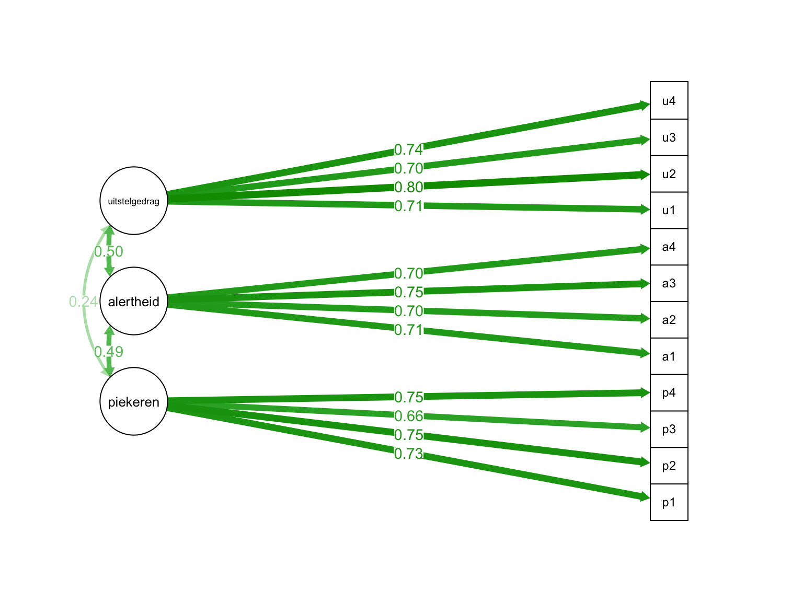
Is die pijl echt? De toets op één lading
Wat zou zeggen over de relatie tussen piekeren en p1? Hetzelfde als altijd: geen relatie. Het regressiegewicht is nul.
Stel dat waar is en je neemt een steekproef. Dan vind je niet precies nul, maar iets in de buurt — en hoe het varieert bij herhaling, dat zegt de standaardfout. Hier is die (de kolom se in de gestandaardiseerde oplossing hierboven). Wij hebben één steekproef genomen en vonden . Hoe ver is dat van nul, in standaardfouten? “Hoe vaak past die standaard error erin?” Dat is de -waarde: ; lavaan rekent met de ongeronde getallen en zegt . Grofweg twee keer erin is al significant; dit is 17 keer. p < .001, dus verwerpen: piekeren heeft een echte relatie met p1.
Toon code (de klokcurve)
x <- seq(-5 * t_se, t_a + 0.05, length.out = 600)
kc <- data.frame(x = x, y = dnorm(x, 0, t_se))
ggplot(kc, aes(x, y)) +
geom_area(fill = "#cfe3f0") +
geom_line() +
geom_vline(xintercept = t_a, colour = "firebrick", linewidth = 0.8) +
annotate("text", x = t_a, y = max(kc$y) * 0.6, hjust = 1.1, colour = "firebrick",
label = sprintf("gevonden: a = %s", fmt_r(t_a))) +
annotate("segment", x = 0, xend = t_se, y = max(kc$y) * 0.3, yend = max(kc$y) * 0.3,
arrow = arrow(length = unit(0.15, "cm"), ends = "both")) +
annotate("text", x = t_se / 2, y = max(kc$y) * 0.36, label = sprintf("SE = %s", se3(t_se)), size = 3.2) +
labs(x = "lading van p1 op piekeren, als H0 waar is", y = NULL) +
theme_minimal(base_size = 11) +
theme(axis.text.y = element_blank(), panel.grid = element_blank())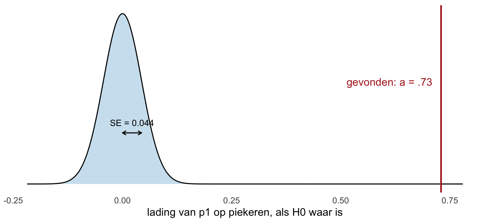
Dat is dezelfde tekening als bij een regressiehelling — een klokcurve rond nul, de standaardfout als stapje, en je eigen ergens in de staart. Die tekening is voor allebei precies dezelfde, en dat is de bedoeling: een lading is een regressiegewicht moet je niet geloven maar zien.
De ladingen lopen hier van (p3) tot (u2), en ze zijn allemaal significant. Voor de ondergrens geldt dezelfde vuistregel als in thema 4 — een afspraak van dit oefenboek, geen regel van je college: vanaf telt een item mee bij zijn factor. Een streep voor hoog trekt je college niet; het noemt de ladingen in zijn eigen voorbeeld hoog, en die van de das vallen daar allemaal binnen. Kwadrateer een lading en je hebt het deel van de variantie in dat item dat de factor verklaart — de van dat item, net als bij regressie. Wat overblijft is de residuvariantie uit de uitvoer; samen zijn ze .
Speel zelf lavaan: waar vandaan komt
Loop met je vinger langs de pijlen in de figuur met de schattingen erop, en vermenigvuldig wat je tegenkomt. Van p1 naar piekeren staat , van piekeren naar p2 staat . Vermenigvuldig die twee — schatten mag, keer is genoeg. En dan een langere route: van p1 naar piekeren (), over de dubbele pijl naar alertheid ( — die samenhang tussen twee factoren heet φ, phi), en dan naar a1 (). Drie getallen, vermenigvuldigen.
Dat eerste product is — met de ongeronde ladingen; met en kom je op , en dat is precies goed genoeg. Dat is de teruggeschatte correlatie tussen p1 en p2. Twee items op dezelfde factor: hun voorspelde correlatie is het product van hun ladingen. Het tweede product is , en dat is de teruggeschatte correlatie tussen p1 en a1: twee items op verschillende factoren delen alleen wat via de dubbele pijl loopt, dus lading keer φ keer lading. Vergelijk met wat lavaan teruggeeft:
r_hat <- cov2cor(fitted(fit_2)$cov)
round(r_hat[c("p1", "p2", "a1"), c("p1", "p2", "a1")], 3) p1 p2 a1
p1 1.000 0.549 0.253
p2 0.549 1.000 0.261
a1 0.253 0.261 1.000Dit is de hele machinerie achter de residuen. De teruggeschatte matrix is niets geheimzinnigs: elke cel is een paar ladingen met elkaar vermenigvuldigd, langs de pijlen van jouw tekening. In model 1 stond tussen de factoren geen pijl, dus daar kwam er tussen de blokken nul uit — en daarom waren die residuen zo groot.
OpmerkingTerugblik op thema 4 — dezelfde items, twee soorten lading
Vorige week kreeg elk item een varimax-lading; nu een CFA-lading. Zelfde dieren, zelfde items, twee getallen:
| Dezelfde twaalf items, gewogen in thema 4 en geschat in thema 5 | ||||
| item | varimax (thema 4) | CFA (dit thema) | h² (thema 4) | R² (dit thema) |
|---|---|---|---|---|
| p1 | .80 | .73 | .66 | .53 |
| p2 | .80 | .75 | .67 | .57 |
| p3 | .75 | .66 | .58 | .43 |
| p4 | .78 | .75 | .65 | .56 |
| a1 | .77 | .71 | .64 | .50 |
| a2 | .80 | .70 | .67 | .49 |
| a3 | .73 | .75 | .63 | .56 |
| a4 | .74 | .70 | .61 | .49 |
| u1 | .75 | .71 | .62 | .50 |
| u2 | .81 | .80 | .71 | .65 |
| u3 | .81 | .70 | .66 | .49 |
| u4 | .80 | .74 | .67 | .54 |
| Note. varimax = de hoogste componentlading van het item na varimax-rotatie (thema 4). CFA = de gestandaardiseerde lading op zijn eigen factor (Std.all). h² = communaliteit uit thema 4; R² = het deel van de itemvariantie dat de factor hier verklaart. | ||||
De CFA-lading is bij 11 van de 12 items lager, en de ligt bij elk item onder de . (Hier is gewoon de lading in het kwadraat, want elk item hangt aan één factor. Zou een item op twee samenhangende factoren laden, dan is het niet meer de som van twee kwadraten — de dubbele pijl telt dan mee. In thema 4 kon je na varimax kwadrateren en optellen; hier alleen zolang elk item één pijl heeft.) Dat is geen slechter model: in thema 4 had een item geen errorpijl, dus alles wat de componenten konden pakken telde mee. Hier krijgt elk item zijn eigen , en wat daarin zit hoort niet bij de factor. De factorcorrelaties van hier ( tot ) liggen om dezelfde reden boven de componentcorrelaties van oblimin ( tot ): zonder de ruis in de weg zien twee factoren elkaar scherper.
En de rat kan dezelfde cel terugrekenen. Hij heeft per item drie ladingen, dus zijn voor een cel is de som van drie producten — één per component. De das heeft er één. Drie cellen naast elkaar:
| Dezelfde cel, twee keer teruggerekend | |||||
| cel | de rat (thema 4) | de das (dit thema) | waargenomen | residu rat | residu das |
|---|---|---|---|---|---|
| p1–p2 | .664 | .549 | .551 | −.113 | .002 |
| p1–a1 | .242 | .253 | .251 | .009 | −.002 |
| a2–p1 | .135 | .250 | .117 | −.018 | −.133 |
| Note. de rat = som van de producten van de varimax-ladingen over drie componenten; de das = product van de ladingen, via de dubbele pijl als de items op verschillende factoren staan. Residu = waargenomen min teruggerekend, uitgerekend met de gedrukte getallen, zodat je het kunt narekenen; met de ongeronde getallen kan een residu een duizendste afwijken. | |||||
Kijk naar de laatste rij, het grootste residu van de das. Daar zit de rat er dichter bij. Dat is geen toeval. Vorige week mocht élk item op élke component laden, en de rat gaf a2 op de piekeren-component een kruislading van — bijna niets — waar zijn drie blokgenoten er , , kregen. Je haalde er je schouders over op; het waren kleine getallen. Maar de das mag dat verschil niet tekenen: bij hem lopen alle alertheid-items via dezelfde dubbele pijl naar piekeren, dus even sterk. Precies wat hij níét mocht tekenen, komt terug als residu. Wat de das een residu noemt, droeg de rat mee in zijn kruisladingen.
En de rotatie? In thema 4 zou je hier roteren. Hier kan dat niet, en hoeft het niet: jij hebt de nullen al gezet toen je tekende.
Waar wringt het nog? Het grootste residu
college-stap 5 · herspecificatie
De das fronst
Zoek in deze matrix het getal dat het verst van nul ligt. Positief of negatief, maakt niet uit. Doe het systematisch — alle kolommen af, of alle rijen — want wie zomaar wat rondkijkt, mist er een.
round(residuals(fit_2, type = "cor")$cov, 2) p1 p2 p3 p4 a1 a2 a3 a4 u1 u2 u3 u4
p1 0.00
p2 0.00 0.00
p3 0.01 0.00 0.00
p4 0.00 0.00 -0.01 0.00
a1 0.00 0.01 0.00 0.00 0.00
a2 -0.13 -0.09 -0.05 -0.03 0.03 0.00
a3 0.08 0.00 0.00 0.02 -0.03 0.01 0.00
a4 0.00 0.05 0.04 0.08 0.02 -0.02 -0.01 0.00
u1 -0.02 -0.05 0.00 -0.01 0.01 0.05 0.05 0.04 0.00
u2 0.03 -0.03 -0.01 0.06 -0.01 0.04 0.08 -0.03 -0.02 0.00
u3 -0.03 -0.05 -0.02 0.05 -0.06 -0.03 -0.06 -0.08 0.00 0.01 0.00
u4 -0.03 -0.02 0.01 0.07 -0.03 -0.02 0.01 -0.03 0.01 0.00 0.01 0.00Gevonden? Het is a2 met p1: . En het is het enige residu dat buiten de band van valt; alle andere blijven erbinnen, en er zijn er 30 positief tegen 36 negatief.
Die laatste telling is een vraag die het practicum ook stelt: zijn de residuen ongeveer normaal verdeeld? Rol de matrix uit tot één rij getallen en maak er een histogram van:
hist(lav_matrix_vech(residuals(fit_2, type = "cor")$cov),
breaks = seq(-0.15, 0.15, by = 0.02) + 0.01, # nul midden in een staaf
xlab = "residu op correlatieschaal", ylab = "aantal cellen", main = "")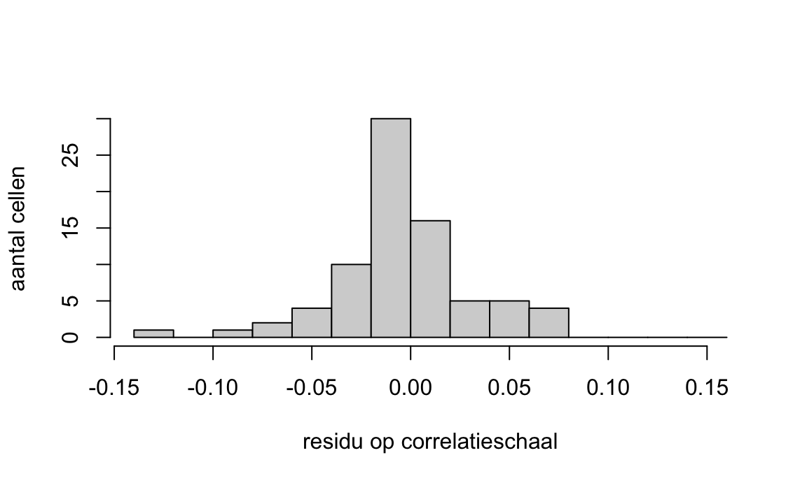
Is dit normaal verdeeld? “Op het moment dat jij New York ziet, dan zeg je nee. Alleen als jij ziet zo’n mooie klokkurve, dan zeg je ja. Maar je ziet nooit zo’n mooie klokkurve.” Wat je wél kunt zeggen, en wat het antwoord is dat de cursus wil: bijna alles ligt tussen en , en plus en min houden elkaar aardig in evenwicht — 30 tegen 36. Dat is wat een redelijk passend model in zijn residuen laat zien. (Let op dat lav_matrix_vech() de diagonaal meeneemt: 12 van de 78 waarden in dit histogram zijn de nullen van elk item met zichzelf, en die zitten allemaal in de staaf rond nul — daarom is die zo hoog.)
Verzin nu twee getallen die dit verschil geven. Een waargenomen correlatie en een teruggeschatte, zó dat waargenomen min teruggeschat op uitkomt. Welke van de twee moet de grootste zijn?
Verzonnen: . Klopt qua som, en je ziet meteen wie er groot was: de teruggeschatte. Nu de echte, allebei op te zoeken — de eerste in de correlatiematrix van de weddenschap, de tweede in fitted(fit_2):
“Heeft het model de werkelijke correlatie overschat of onderschat?” Het model zei , in het echt is het maar . Het model zat te hoog: overschat. Wie de leeftijd van vijftig op tweeënvijftig schat, overschat ook.
En je weet nu waar dat vandaan komt: , langs de dubbele pijl tussen alertheid en piekeren. Die pijl zegt: alle alertheiditems hangen via de factor met alle piekeritems samen, en wel ongeveer even sterk. Maar a2 doet dat minder dan de rest — kijk naar zijn hele rij tegen de piekeritems: , , , . Allemaal negatief. Dat is geen losse cel, dat is een rij.
OpmerkingDrie patronen, drie aanwijzingen
| wat je ziet in de residuen | wat het kan betekenen | en wat je dan zou bijtekenen |
|---|---|---|
| een heel blok positieve residuen tussen de items van twee factoren | de factoren hangen samen, en je model ontkent dat | een dubbele pijl tussen de factoren |
| één rij (of kolom) die binnen zo’n blok afwijkt van de rest | dat ene item laadt óók op de andere factor | een tweede lading voor dat item — een kruislading |
| één losse cel die afwijkt, zonder patroon eromheen | die twee items hebben iets gemeen buiten hun factor om | een dubbele pijl tussen hun twee errors |
Het blok heb je bij model 1 gezien. De rij hierboven is de tweede. Bij een samenhang die ontbreekt én negatief is, draait alles om: een blok negatieve residuen wijst op een negatieve factorcorrelatie, een negatieve rij, zoals hier, op een negatieve kruislading, en een negatieve losse cel op twee errors die negatief samenhangen. En let op het woordje kan: residuen wijzen een richting aan, ze bewijzen niets. Of het helpt, weet je pas als je het aangepaste model draait.
OpmerkingTerzijde — de andere route: modificatie-indices
Je college noemt bij herspecificatie twee manieren om te zien waar een model wringt, en zet ze in deze volgorde: optie 1 is de modificatie-index, optie 2 is het gestandaardiseerde residu. Dit hoofdstuk loopt de tweede, en dat is geen eigenzinnigheid van ons — de werkboektekst van de cursus zegt met zoveel woorden dat deze cursus met gestandaardiseerde residuen werkt, waar het handboek modificatie-indices gebruikt. De functiedoos van het practicum van week 5 noemt residuals() en geen modindices(). Ken de eerste route dus van naam, en reken met de tweede.
Wat een modificatie-index is. Neem elke pijl die je niet getekend hebt — elke parameter die dus op nul vastzit. De modificatie-index van zo’n pijl is: met hoeveel zou de zakken als je hem vrijliet? In R:
modindices(fit_2, sort = TRUE)Je krijgt een lijst, gesorteerd van veelbelovend naar nutteloos.
En daar zit meteen het probleem. Die lijst is gesorteerd op wat het meest helpt, en op niets anders. Er staat geen kolom bij met of het ergens op slaat. Volg je hem van boven naar beneden, dan laat je de data bepalen wat je theorie is — precies waar de das hierboven nee tegen zegt. Je model is dan niet meer confirmatief maar exploratief geworden, en een exploratief gevonden model moet je opnieuw toetsen in nieuwe data voordat je er iets over mag beweren.
Een residu heeft daarbij één voordeel dat een modificatie-index niet heeft, en dat is waarschijnlijk ook waarom de cursus hem kiest: een residu zegt er meteen bij wat er niet klopt en welke kant op. Een blok plusjes betekent iets anders dan een negatieve rij. Een modificatie-index zegt alleen hoeveel het zou schelen — en dat is een getal waar je makkelijker achteraan rent dan een patroon dat je eerst moet kunnen uitleggen.
Twee reparaties, en de das doet ze geen van beide
Er zijn er twee, in twee kleuren. Geel: een extra pijl — hier zou dat a2 óók op piekeren laten laden. Groen: de errors van a2 en p1 mogen samenhangen, zonder dat je zegt waarom. “Of zullen we allebei, dat weet ik eigenlijk niet. Maakt ook niet uit.” In lavaan is elk van de twee één regel:
# geel -- een kruislading: het item laadt op een tweede factor
model_2_kruis <- '
piekeren =~ p1 + p2 + p3 + p4 + a2
alertheid =~ a1 + a2 + a3 + a4
uitstelgedrag =~ u1 + u2 + u3 + u4
'
# groen -- samenhangende errors: één regel erbij, verder niets
model_2_err <- '
piekeren =~ p1 + p2 + p3 + p4
alertheid =~ a1 + a2 + a3 + a4
uitstelgedrag =~ u1 + u2 + u3 + u4
a2 ~~ p1
'Allebei kosten ze één vrijheidsgraad, en allebei zijn ze genest in model 2 — er komt alleen een pijl bij. De kruislading haalt de omlaag met (p = .012), de errorsamenhang met (p = .014). Significant, allebei. De kruislading die eruit komt is : negatief, zoals de rij al zei.
En nu snauwt de das, en hij heeft gelijk.
BelangrijkDon’t: achter een residu aanrennen zonder verhaal
Een veelvoorkomend patroon: een onderzoeker fit een CFA, het past matig, hij bekijkt de residuen, laat de twee items met het grootste residu samenhangen, en de fit wordt mooi. Hij rapporteert: “Model with one residual correlation provides good fit.”
Wat hij niet vermeldt: waarom. Waarom zou a2 bij piekeraars juist lager uitvallen dan de andere alertheiditems? Delen die twee items een formulering? Staan ze naast elkaar op de lijst? De das weet het niet. En dan is bijtekenen de data laten bepalen wat je theorie is. In een nieuwe steekproef springt een andere cel eruit, teken je een andere pijl, en heb je een ander model. Dat heet meesurfen op toeval capitalization on chance, en wie het achteraf opschrijft alsof het vooraf bedacht was doet aan HARKing — Hypothesizing After the Results are Known.
En over die gele pijl: een vierde factor erbij betekent “dat je als onderzoeker nog een hoofdstuk moet schrijven”. Kun je dat hoofdstuk niet schrijven, dan teken je de pijl niet.
Wie op grond van residuen bijstelt moet altijd: (1) inhoudelijk verantwoorden waarom die pijl er zou moeten zijn, (2) melden dat het achteraf is, (3) herhalen in nieuwe data, en (4) bescheiden zijn — een aangepast model is een hypothese, geen bevestigde structuur.
De das laat model 2 staan, en zet dat ene residu in zijn verslag. Geen drijfzand.
OpmerkingSnoeien tegenover fit verbeteren
Een model kun je in twee richtingen bijstellen, en ze zijn elkaars spiegelbeeld.
| snoeien trimming | fit verbeteren improving fit | |
|---|---|---|
| wat je doet | een vrije pijl vastzetten op nul | een vastgezette pijl vrijlaten |
| in de tekening | een pijl weghalen | een pijl bijtekenen |
| wat er met de fit gebeurt | wordt nooit beter, meestal iets slechter | wordt beter |
| waarom je het doet | zuinigheid — een eenvoudiger model dat het even goed doet | het model past niet |
“Trimmen, dat betekent scheren, dus pijlen weghalen. Maar dan maak je hem simpeler. En in de wetenschap vinden wij simpelheid heel fijn: als je twee modellen hebt, één complex en één simpel, maar ze leggen de data allebei even goed uit, dan ga je voor het simpelste.”
Bij de das is de zwakste dubbele pijl die tussen piekeren en uitstelgedrag (). Zet je die op nul, dan stijgt de met op één vrijheidsgraad, p = .005: dat kost significant fit, dus die pijl blijft. Vastzetten maakt de fit nooit beter — je levert fit in en koopt er eenvoud voor terug. Snoeien is dus nooit een reparatie voor een model dat niet past.
Met een rem erop. Hoe meer pijlen je schat, hoe groter de kans dat er eentje die in de populatie best van nul verschilt in jóuw steekproef toevallig klein uitvalt. Snoei je die weg, dan is je model netter in deze steekproef en onwaarder in de populatie. Ook hier: alleen met een inhoudelijke reden, en dan is de eerlijke vraag waarom je dat niet al bij het tekenen bedacht.
TipHet stappenplan — de vijf stappen nog een keer, nu met wat je doet
“Dus dat is wel de hoofdprocedure. […] Dat is in principe gewoon het hele proces, dus maak het ook niet te heftig.”
Aan het begin van dit hoofdstuk stonden de vijf stappen getekend, voordat je er eentje had gedaan. Nu heb je ze alle vijf gelopen. Hier staan ze nog een keer, met erbij wat je op elke plek dóét — en nu weet je van elke regel waar hij over gaat.
| college-stap | wat je daar doet |
|---|---|
| 1 · specificatie | Teken het model op basis van je theorie: vierkantjes, ovalen, enkele pijlen voor de ladingen, dubbele voor de samenhang, een error per item. Schrijf erbij wat die tekening aan correlaties belooft — daar houd je hem straks aan. En vertaal hem in lavaan. |
| 2 · identificatie | Is dit model überhaupt te toetsen? met het aantal items, = alle pijlen, . Is ? Dan mag je door. Is hij nul of negatief, dan hoef je R niet eens te openen. |
| 3 · parameters schatten | cfa(model, data, std.lv = TRUE). R schat alles in één keer; leg npar en df naast je eigen telling. Maar lezen doe je ze pas na stap 4 — daarom staat het lezen van de ladingen in dit hoofdstuk achteraan, terwijl het bij stap 3 hoort. |
| 4 · evaluatie | Past het? Eerst de toets: met zijn en zijn -waarde — let op, dát is een andere dan die van rij 2 hierboven. Dan de drie maten — RMSEA, NFI en CFI — tegen hun banden; spreken ze elkaar tegen, volg dan de meerderheid. |
| 5 · herspecificatie | Waar wringt het? residuals(fit, type = "cor"), zoek het grootste residu en zijn patroon: blok, rij of cel. Pas aan of snoei, en alleen met een verhaal. |
En dan de lus terug, van 5 naar 4 — de gebogen oranje pijl rechts in de tekening aan het begin van dit hoofdstuk, die van het onderste vakje omhoog wijst naar evaluatie. Dit is geen lijstje dat je één keer van boven naar beneden afloopt. Pas je iets aan, dan heb je een ander model, en dat model is nog niet geëvalueerd. Dus: opnieuw draaien — het schatten neemt R in diezelfde regel mee — en dan opnieuw de toets en de maten.
Er komt dan één vraag bij die er bij het eerste model nog niet was: is deze béter dan de vorige? Mag je die vraag stellen — zijn de twee modellen genest — dan beantwoordt hem, precies zoals bij het tweede model van de das. “Nog een keer runnen, vergelijken met model 1, is het beter? Oh ja, leuk.” En dan kun je opnieuw bij 5 uitkomen, en nog eens rond.
Waar de cyclus stopt, bepaalt de wiskunde niet. Hij stopt als je geen verháál meer hebt voor de volgende pijl — en dan rapporteer je: het model, de met zijn vrijheidsgraden en zijn -waarde, RMSEA, NFI en CFI, de ladingen (Std.all), de factorcorrelaties, en wat je onderweg hebt aangepast, inclusief dat het achteraf was.
BelangrijkProblemen en beperkingen — waar deze techniek zwak staat
Je college sluit hierop af, en dat is niet voor niets het laatste wat je meekrijgt.
Een CFA schat veel parameters tegelijk. Ons model 2 schat er 27, op 199 dieren. Dat gaat goed. Maar draai hetzelfde model op vijftig dieren en je schat nog steeds 27 getallen, nu uit 78 vakjes waar veel minder mensen achter zitten: de oplossing bestaat dan wel, maar hij wiebelt, en in een volgende steekproef staat hij ergens anders. Hoeveel mensen “genoeg” is hangt af van je model, en daar bestaat geen enkel getal voor dat overal opgaat — wat wél opgaat is dat meer parameters om meer mensen vragen.
En daar zit meteen een spanning in waar niemand omheen kan. De -toets wordt sneller significant naarmate je meer mensen hebt. De techniek vraagt dus om veel mensen, en straft je daar vervolgens voor bij haar eigen toets. Dat is geen fout in de wiskunde; het is de reden dat je nooit op de toets alleen afgaat en altijd de maten erbij pakt. Opgave E6 hierna laat je dat met eigen ogen zien: dezelfde tekening, dezelfde correlaties, alleen meer dieren — en de toets draait om, terwijl NFI geen duimbreed verschuift. (CFI en RMSEA schuiven wel mee; waarom, staat bij die opgave.)
Een CFA leunt op sterke aannames over je data — onder andere dat je variabelen ongeveer normaal verdeeld zijn — en is minder bestand tegen schendingen daarvan dan veel andere technieken die je kent. Een scheve verdeling die een t-toets nauwelijks deert, kan hier wél doorwerken in je schattingen.
En een model dat je hebt bijgesteld, is niet meer confirmatief. Dat is de scherpste van allemaal. Je begon met ik weet het al, ik ga het toetsen. Zodra je op grond van de uitkomst een pijl bijtekent, heb je de data laten meebeslissen over je theorie, en dan heb je niet meer getoetst maar gezocht. Wat je dan hebt is een hypothese, en die bevestig je niet in dezelfde data waarin je hem gevonden hebt. Je hebt nieuwe data nodig.
Nog een laatste, en die gaat niet over de techniek maar over de mensen die hem gebruiken. Een CFA levert een tekening op met getalletjes erbij, en dat ziet er ontzettend overtuigend uit — overtuigender dan de data eronder rechtvaardigen. Wees daar alert op, ook bij jezelf: een mooi paddiagram is nog steeds maar een misschien.
Oefeningen
Pen-en-papier eerst, dan R
T1 — CFA, EFA, PCA of regressie?
OpmerkingVraag T1 — Pen-en-papier
Voor elk vignet: kies CFA, EFA, PCA, of iets anders.
a) Een onderzoeker heeft een Big Five-vragenlijst en wil toetsen of de vijf-factor-structuur in haar Nederlandse steekproef houdt.
b) Een psycholoog heeft items en geen idee hoeveel dimensies erin zitten.
c) Een arts wil klinische maten reduceren tot een paar samenvattende scores voor een latere regressie.
d) Een onderzoeker wil weten of een trauma-vragenlijst in Nederland dezelfde structuur heeft als in de VS-norm.
OpgeletAntwoord — open na je eigen poging
a) CFA. Vooraf gespecificeerd model, toetsing van structuur.
b) EFA. Exploratief, onbekend aantal dimensies, latente factoren met meetfout.
c) PCA. Reductie zonder latente claim; samenvattende scores.
d) CFA, twee keer: hetzelfde model in beide steekproeven, en daarna een toets of het model in beide groepen hetzelfde werkt (measurement invariance — buiten dit thema, maar de basis-CFA per groep is het eerste wat je doet).
Vuistregel: toetsen van een vooraf getekend model = CFA. Ontdekken hoeveel factoren = EFA. Samenvatten zonder latente claim = PCA.
T2 — Tellen op een tekening
OpmerkingVraag T2 — Pen-en-papier
Een onderzoeker heeft tien items, tot en met , en denkt dat tot en met neuroticisme meten, tot en met extraversie en tot en met consciëntieusheid. Ze verwacht dat extraversie negatief samenhangt met allebei de andere, maar dat neuroticisme en consciëntieusheid niet samenhangen. En ze verwacht dat (“ik wil alles perfect doen”) óók bij consciëntieusheid hoort.
a) Teken het model. De factoren staan op variantie .
b) Tel .
c) Tel , per soort pijl.
d) Bereken . Is het model toetsbaar?
e) Het nulmodel bij deze tien items: hoeveel ?
OpgeletAntwoord — open na je eigen poging
a) Drie ovalen, tien vierkantjes, elk vierkantje een errorpijl. Van neuroticisme vier pijlen (–), van extraversie drie (–), van consciëntieusheid drie (–) plus een naar . Twee dubbele pijlen: extraversie–neuroticisme en extraversie–consciëntieusheid. Tussen neuroticisme en consciëntieusheid: niets — die staat op nul.
b) : tien varianties en vijfenveertig covarianties.
c) 10 errorpijlen, 11 voorspelpijlen (tien ladingen plus de kruislading), 2 correlatiepijlen. .
d) . Groter dan nul: overgeïdentificeerd, toetsbaar. “Dus je hebt een go om verder te gaan.”
e) Alleen de tien errorpijlen: .
T3 — De maten zijn het oneens
OpmerkingVraag T3 — Pen-en-papier
Een onderzoeker toetst een model bij N = 300 deelnemers en rapporteert:
chisq df pvalue baseline.chisq
78.400 34.000 0.000 640.000
nfi cfi rmsea
0.878 0.925 0.066(Het nulmodel heeft hier .)
a) Schrijf en op en beslis: past het model volgens de -toets?
b) Zet elke maat in zijn band — goed, midden of slecht. Wat zegt de meerderheid?
c) Reken de NFI na uit de twee chi-kwadraten.
d) Wat doe je met deze uitkomst?
OpgeletAntwoord — open na je eigen poging
a) : het model past (). p < .001, dus verwerpen: volgens de toets past het niet. Kanttekening: bij N = 300 pikt de toets ook kleine afwijkingen op.
b) RMSEA ligt tussen en : de middenband, redelijk. NFI zakt door : slecht. CFI haalt niet: slecht. De meerderheid — twee van de drie — zegt slecht, en de toets zei ook nee. Rapporteer ze alle vier, inclusief dat RMSEA het niet eens was met de andere twee.
c) . Precies de uitvoer.
d) Niet pijlen bijtekenen tot het past. Wél de residuen bekijken: waar zit het, en is er een verhaal bij?
T4 — Een residu lezen
OpmerkingVraag T4 — Pen-en-papier
Een onderzoeker toetst een driefactor-model waarin alle samenhangen tussen de factoren op nul staan. Ze bekijkt de residuen op correlatieschaal en ziet:
- De residuen tussen de items van factor 1 en die van factor 2 zijn bijna allemaal negatief.
- Eén losse cel springt eruit: het residu van met is , terwijl de cellen eromheen rond nul liggen. Beide items horen bij factor 3.
- Verder ligt alles binnen .
a) Wat betekent het dat het residu van met groter dan nul is: heeft het model hun samenhang over- of onderschat?
b) Welke aanpassing suggereert het blok negatieve residuen?
c) Welke aanpassing suggereert die ene losse cel — en mag ze die doorvoeren?
d) Ze overweegt in plaats daarvan te snoeien. Wat gebeurt er dan met de fit?
OpgeletAntwoord — open na je eigen poging
a) Werkelijk min teruggeschat is positief, dus het werkelijke getal was groter: het model onderschat hoe sterk en samenhangen. Net als bij de leeftijd: vijftig geschat op vijfenveertig is onderschat.
b) Een blok dat één kant op wijst hoort bij de samenhang tussen die twee factoren. Haar model zet die op nul, dus de residuen zijn de werkelijke correlaties zelf — en die zijn negatief. Factor 1 en 2 hangen negatief samen; laat die dubbele pijl vrij (haal F1 ~~ 0*F2 weg) en kijk of het model beter wordt.
c) Een losse positieve cel zonder patroon wijst op samenhangende errors: en hangen sterker samen dan factor 3 kan verklaren, dus ze delen iets dat niet via factor 3 loopt. In lavaan is dat één regel erbij, X3 ~~ X8. Doorvoeren mag alleen als ze kan zeggen wat — een formulering, een plek op de lijst. Kan ze dat niet, dan is het meesurfen op toeval. En als ze het wél doet: melden dat het achteraf is, en herhalen in nieuwe data.
d) De fit wordt er niet beter van. Een pijl vastzetten houdt de fit gelijk of maakt hem slechter. Snoeien doe je voor eenvoud, niet als reparatie.
T5 — Genest of niet?
OpmerkingVraag T5 — Pen-en-papier
Drie tekeningen op de items van de das — A, B en C, los van de nummering in het hoofdstuk.
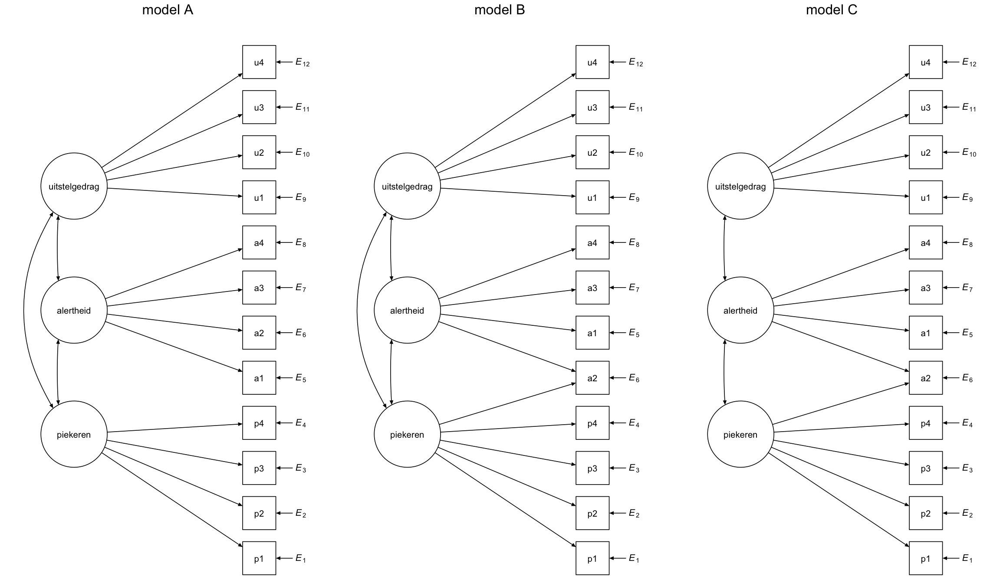
a2 staat in B en C op een andere plek dan in A, omdat hij daar aan twee factoren hangt; dat is de pijl erbij. Zijn errornummer verhuist niet mee — a2 is item 6 en houdt in alle drie de panelen.
a) Zijn A en B genest?
b) Zijn A en C genest?
c) Zijn B en C genest?
d) Voor welke paren mag je gebruiken?
OpgeletAntwoord — open na je eigen poging
a) Ja. Van A naar B teken je één pijl bij (a2 op piekeren) en haal je niets weg. A is genest binnen B.
b) Nee. Van A naar C moet je een pijl bijtekenen (de kruislading) én een weghalen (de dubbele pijl piekeren–uitstelgedrag). Andersom ook. Niet genest.
c) Ja. C is B zonder één dubbele pijl. Van C naar B alleen bijtekenen. C is genest binnen B.
d) Alleen bij (a) en (c). Bij (b) zegt het verschil van twee chi-kwadraten niets, en anova() waarschuwt je daar niet voor.
T6 — Van df terug naar de tekening
OpmerkingVraag T6 — Pen-en-papier
Een onderzoeker rapporteert een CFA op twaalf items met drie factoren, elk item op precies één factor, de factoren op variantie . Ze noemt alleen: . Meer krijg je niet.
a) Mochten de factoren in haar model met elkaar samenhangen? Bouw het terug uit de .
b) Een collega toetst hetzelfde model op andere data en meldt . Wat heeft hij anders gedaan?
c) Een derde meldt . Noem twee dingen die dat kunnen verklaren.
OpgeletAntwoord — open na je eigen poging
a) . Twaalf errorpijlen en twaalf ladingen staan vast: . Dan is wat er overblijft vóór de dubbele pijlen. Zij heeft , dus dubbele pijlen: alle drie de factorcorrelaties stonden open. Ja.
b) Geen dubbele pijlen: . Hij heeft de drie factorcorrelaties op nul gezet. “Drie pijlen minder betekent drie vrijheidsgraden.”
c) Eén pijl méér dan bij (a): een kruislading (een item op een tweede factor), of twee errors die mogen samenhangen. Uit de alleen kun je niet zien welke van de twee.
E1 — De toets en de drie maten lezen
OpmerkingVraag E1 — De toets en de drie maten lezen
Een CFA-uitvoer bij N = 220:
chisq df pvalue baseline.chisq
30.100 24.000 0.181 700.000
nfi cfi rmsea
0.957 0.991 0.034Welke conclusie?
a) Goede fit op alle vier de criteria.
b) Matige fit; de residuen moeten bekeken worden.
c) Slechte fit op NFI en CFI.
d) Kan niet worden beoordeeld zonder de ladingen.
OpgeletAntwoord — open na je eigen poging
a) De toets is niet significant (p = .18), en NFI , CFI en RMSEA vallen alle drie in de bovenste band van de sheets. Vier op vier, geen meerderheid te tellen. Deze uitvoer blijft ook binnen de grenzen uit de literatuur, dus welke van de twee regels je ook aanlegt: het antwoord verandert er niet van.
Antwoord d is het verkeerde antwoord op deze vraag: fit en ladingen zijn twee aparte vragen. Een model kan uitstekend passen en tóch een item bevatten dat nauwelijks op zijn factor laadt.
E2 — Ladingen
OpmerkingVraag E2 — Ladingen
Gestandaardiseerde ladingen van een factor met vier items:
i1: a = .75
i2: a = .68
i3: a = .42
i4: a = .81Welke conclusie?
a) Alle items dragen sterk bij; houd ze alle vier.
b) Item laadt zwak; overweeg herziening van het item.
c) Item overheerst de factor.
d) De factor is onderbepaald.
OpgeletAntwoord — open na je eigen poging
b) ligt net boven de ondergrens van uit thema 4, maar ver onder de andere drie, die op of hoger liggen.
Kwadrateer en je ziet het verschil: de factor verklaart in i3 maar van de variantie, in i4 . Weghalen doe je niet meteen — dat is snoeien, en snoeien maakt de fit nooit beter. Melden wel.
E3 — Modelvergelijking
OpmerkingVraag E3 — Modelvergelijking via Δχ²
Twee geneste modellen:
| Modelfit van het eenvoudige en het ingewikkelde model | ||
| Model | χ² | df |
|---|---|---|
| Eenvoudig (1 factor) | 156.00 | 35 |
| Ingewikkeld (2 factoren) | 42.00 | 34 |
Wat is de conclusie?
a) Het tweefactor-model past significant beter.
b) Het tweefactor-model past slechter (te complex).
c) De modellen zijn gelijkwaardig.
d) De toets is ongeldig bij geneste modellen.
OpgeletAntwoord — open na je eigen poging
a) met ; pchisq(114.00, 1, lower.tail = FALSE) geeft p < .001. (de twee modellen zijn even goed) verwerpen: het ingewikkelde model past significant beter.
Antwoord d heeft het precies verkeerd om: de verschiltoets mag alleen bij geneste modellen.
E4 — Wat vorige week anders was
OpmerkingVraag E4 — Thema 4 naast thema 5
In thema 4 kreeg u3 na varimax een lading van ; hier is zijn CFA-lading . Zelfde dieren, zelfde item.
a) Waarom is de CFA-lading lager? Wat heeft het item hier dat het in thema 4 niet had?
b) In thema 4 werd de oplossing geroteerd. Waarom gebeurt dat hier niet?
c) De componentcorrelaties onder oblimin lagen tussen en ; de factorcorrelaties hier tussen en . Hogere getallen — is de samenhang hier dan sterker?
OpgeletAntwoord — open na je eigen poging
a) Een errorpijl. In thema 4 was een component een gewogen som van de items; er was geen apart stuk voor wat de componenten níét pakten. Hier krijgt elk item zijn eigen , en alleen wat de factor deelt met het item telt als lading. De lading is dus lager omdat de ruis eruit is gehaald, niet omdat het item slechter is.
b) Er valt niets te draaien. Roteren was in thema 4 nodig omdat elk item op élke component mocht laden en je de assen zó wilde leggen dat elk item bij één component hoorde. Hier heb jij die keuze al gemaakt toen je tekende: elk item op één factor, de rest op nul.
c) Nee — het is dezelfde samenhang, scherper gezien. Onder oblimin zit de ruis van de items nog in de componenten en dempt die de correlatie ertussen. De CFA-factoren zijn van die ruis geschoond, en dan zien twee factoren elkaar duidelijker. Zelfde reden als bij (a).
E5 — Mini-CFA bij de das
OpmerkingVraag E5 — In R
Een onderzoeker meet bij honderd dassen zes items op een -puntsschaal. Drie items meten zelfregulatie (z1–z3), drie meten prikkelgevoeligheid (p1–p3). Zie data/das_zelfregulatie.RData.
a) Teken het model, tel , en , en fit het.
b) Rapporteer , , de -waarde en de drie maten. Klopt lavaans met je telling?
c) Rapporteer de gestandaardiseerde ladingen en de samenhang tussen de twee factoren.
d) Bekijk de residuen. Welk paar items wordt het slechtst teruggeschat, en zat het model te hoog of te laag?
e) Schrijf één APA-zin met je conclusie.
OpgeletAntwoord — open na je eigen poging
load("data/das_zelfregulatie.RData")
model_das <- '
zelfregulatie =~ z1 + z2 + z3
prikkelgevoelig =~ p1 + p2 + p3
'
fit_das <- cfa(model_das, data = das_zelfregulatie, std.lv = TRUE)
fitMeasures(fit_das, c("npar", "chisq", "df", "pvalue", "nfi", "cfi", "rmsea")) npar chisq df pvalue nfi cfi rmsea
13.000 8.815 8.000 0.358 0.952 0.995 0.032 sol_das <- standardizedSolution(fit_das)
sol_das[sol_das$op %in% c("=~", "~~") & sol_das$lhs != sol_das$rhs,
c("lhs", "op", "rhs", "est.std", "se", "pvalue")] lhs op rhs est.std se pvalue
1 zelfregulatie =~ z1 0.752 0.064 0.00
2 zelfregulatie =~ z2 0.777 0.062 0.00
3 zelfregulatie =~ z3 0.759 0.063 0.00
4 prikkelgevoelig =~ p1 0.738 0.074 0.00
5 prikkelgevoelig =~ p2 0.640 0.078 0.00
6 prikkelgevoelig =~ p3 0.784 0.073 0.00
15 zelfregulatie ~~ prikkelgevoelig 0.196 0.123 0.11round(residuals(fit_das, type = "cor")$cov, 3) z1 z2 z3 p1 p2 p3
z1 0.000
z2 0.003 0.000
z3 0.000 -0.003 0.000
p1 0.005 0.072 -0.009 0.000
p2 -0.124 -0.144 -0.042 0.009 0.000
p3 0.005 0.019 0.085 -0.007 0.004 0.000a) Twee ovalen, zes vierkantjes, zes errorpijlen, zes ladingen, één dubbele pijl. , , .
b) , p = .36; blijft staan. NFI , CFI , RMSEA . En df in de uitvoer is 8 — precies je telling.
c) De ladingen lopen van (p2) tot (p3), alle p < .001. De samenhang tussen de factoren is en niet significant, p = .11. Dat is een ander verhaal dan bij de bosdieren, en het hoort in je conclusie: bij honderd dassen kun je niet aantonen dat de twee samenhangen. Dat is niet hetzelfde als ze hangen niet samen.
d) Het grootste residu is p2 met z2: . Negatief, dus het model zat te hoog — het overschat die samenhang. En het valt buiten de band van ; er valt er nog één buiten, en die staat in dezelfde rij: p2 tegen alle drie de items van het andere blok geeft , , . Dat is geen losse cel maar een rij, en volgens de patroontabel bij het grootste residu zegt een negatieve rij: dit item laadt misschien ook, negatief, op de andere factor. Wat je ermee doet: precies wat de das deed. Je hebt geen verhaal waarom p2 zich zo gedraagt, en met honderd dassen is één rij snel toeval. Dus je meldt het in je verslag, en je tekent niets bij.
e)
Zo rapporteer je het
Bij N = 100 dassen werd een tweefactor-model geschat met zelfregulatie (–) en prikkelgevoeligheid (–) als latente factoren. Het model paste goed, , p = .36, NFI , CFI , RMSEA . De gestandaardiseerde ladingen liepen van tot , alle p < .001. De samenhang tussen de twee factoren bedroeg en was niet significant, p = .11.
E6 — De fitmeter: dezelfde tekening, meer dieren
OpmerkingVraag E6 — In R
Neem de correlatiematrix van de twaalf items en doe alsof hij de populatie is. Fit het eerste model van de das erop, alsof je hem hebt gemeten bij honderd, tweehonderdvijftig, duizend en vierduizend dieren. Dat kan met sample.cov en sample.nobs in plaats van data.
Voorspel eerst: wat gebeurt er met de als het aantal dieren groeit? En met RMSEA, NFI en CFI?
R_pop <- cor(bos_dieren_dimensies[, items], use = "complete.obs")
uit <- sapply(c(100, 250, 1000, 4000), function(n) {
f <- cfa(model_1, sample.cov = R_pop, sample.nobs = n, std.lv = TRUE)
round(fitMeasures(f, c("chisq", "pvalue", "nfi", "cfi", "rmsea")), 3)
})
colnames(uit) <- paste0("n = ", c(100, 250, 1000, 4000))
uit n = 100 n = 250 n = 1000 n = 4000
chisq 54.480 136.201 544.803 2179.210
pvalue 0.456 0.000 0.000 0.000
nfi 0.877 0.877 0.877 0.877
cfi 0.999 0.921 0.887 0.879
rmsea 0.009 0.078 0.095 0.099a) Bij welke verwerpt de toets het model, en bij welke niet?
b) Welke maat beweegt helemaal niet? En welke wel — en welke kant op?
c) Waarom kunnen een toets en een fit-maat het hierdoor oneens zijn?
OpgeletAntwoord — open na je eigen poging
a) Bij honderd dieren is p = .46: blijft staan. Bij vierduizend is p < .001: verworpen. Dezelfde tekening, dezelfde correlaties — alleen meer dieren, en de groeit precies mee: 54.48 bij honderd, 2179.21 bij vierduizend. Veertig keer zoveel dieren, veertig keer zo’n grote .
b) NFI staat stil op , bij elke . Het is een verhouding van twee afstanden, en beide groeien even hard mee: op blijft op . CFI en RMSEA bewegen wél — CFI van naar , RMSEA van naar — omdat ze eerst de van de aftrekken, en die blijft 54 terwijl de groeit. Bij honderd dieren ligt de () vlak op zijn , en dan is er na aftrekken bijna niets over: het model lijkt beter dan het is.
Leg ze nu naast de banden van je college, want dan gebeurt er iets wat je moet kunnen navertellen. RMSEA loopt van goed bij honderd dieren naar redelijk bij tweehonderdvijftig, en komt bij duizend en vierduizend ( en ) in het stuk tussen en terecht waar de sheets géén etiket geven. Hij wordt dus bij geen enkele steekproefgrootte slecht — hij loopt het gat in en blijft daar. CFI ondertussen gaat van goed naar slecht en keurt het model vanaf tweehonderdvijftig dieren af. De maten zijn het hier niet één keer oneens maar bij bijna elke steekproefgrootte, en de -waarde gaat ondertussen van niet significant naar nul. Als je de meerderheidsregel hierop loslaat bij vierduizend dieren: NFI slecht, CFI slecht, RMSEA zonder etiket — twee stemmen voor slecht en een onthouding, dus het oordeel is slecht.
c) Omdat een toets is op een afwijking, hoe klein ook, en bij genoeg dieren wordt élke afwijking significant. De maten vragen iets anders: hoe groot is de afwijking, in verhouding. “Chi-kwadraat is vaak significant vanwege veel mensen. Vandaar ook dat we naar meerdere dingen kijken.”
R-spiekblad — CFA van begin tot eind
# 1. Pakketten en data ---------------------------------------------------
library(tidyverse)
library(lavaan)
library(semPlot)
load("data/bos_dieren_dimensies.RData")
# 2. Het model tekenen in tekst ------------------------------------------
model <- '
piekeren =~ p1 + p2 + p3 + p4 # =~ : is gemeten door
alertheid =~ a1 + a2 + a3 + a4
uitstelgedrag =~ u1 + u2 + u3 + u4
piekeren ~~ 0*alertheid # ~~ 0* : deze samenhang staat op nul
' # (laat weg wat mag samenhangen)
# 3. Fitten, met de factoren op variantie 1 -------------------------------
fit <- cfa(model, data = bos_dieren_dimensies, std.lv = TRUE)
# 4. Toets en maten ------------------------------------------------------
fitMeasures(fit, c("npar", "chisq", "df", "pvalue", "nfi", "cfi", "rmsea"))
summary(fit, fit.measures = TRUE, standardized = TRUE) # lees Std.all
# 5. Waar wringt het? ----------------------------------------------------
residuals(fit, type = "cor")$cov # residuen op correlatieschaal
fitted(fit)$cov # de teruggeschatte matrix zelf
# 6. Tekenen -------------------------------------------------------------
# style = "lisrel" tekent de error als de enkele rechte pijl van je college;
# laat je hem weg, dan krijg je een dubbele zelflus aan elk vierkantje.
semPaths(fit, what = "std", layout = "tree", rotation = 2, style = "lisrel")
# 7. Twee geneste modellen vergelijken ------------------------------------
anova(fit_klein, fit_groot)
pchisq(chi_klein - chi_groot, df_klein - df_groot, lower.tail = FALSE)Wat blijft liggen
- Modificatie-indices — de andere route naar waar past het niet, die je college als optie 1 noemt en waar de cursus zelf niet mee rekent. Wat hij is en waarom dat zo is, staat in het terzijde bij het grootste residu. Wat hier blijft liggen is het gebruik ervan in onderzoek waar je hem wél tegenkomt: hoe je een aanpassing die uit zo’n lijst komt netjes rapporteert.
- Measurement invariance — hetzelfde model in meerdere groepen, en toetsen of het overal hetzelfde werkt.
- SEM — meetmodel plus structureel model: pijlen tussen factoren, en dan mag je voorspellen in plaats van correleren.
- Item Response Theory — thema 6.
Voor verdieping: Brown (2015, Confirmatory Factor Analysis for Applied Research); Kline (2016, Principles and Practice of Structural Equation Modeling).
Aan het eind van de dag
De das zat met zijn rug tegen de stam en keek naar zijn tekening. Er stonden drie pijlen op die er vanochtend niet stonden.
“Je had ongelijk,” zei de bunzing.
“Op één punt.” De das gromde. “Ik dacht dat ze los van elkaar stonden. De residuen zeiden van niet, drie blokken lang. Dus die heb ik erbij getekend, en nu past het.”
“En dat ene vakje, dat rode?”
“Dat laat ik staan.” Hij tikte erop. “Ik weet niet waarom a2 bij piekeraars lager uitvalt. Ik zou een pijl kunnen tekenen en dan wordt het mooier. Maar dan teken ik wat de data zeggen, niet wat ik weet.”
De rat, op zijn tak: “Vorige week vond ik dezelfde drie.”
“Jij vond ze. Ik heb ze getoetst.” De das keek omhoog. “En morgen komt de uil. Die kijkt niet naar twaalf items tegelijk, die kijkt naar één item per keer: hoe moeilijk het is, en hoe scherp het onderscheidt.”
De bunzing knikte en kroop weg. Boven het bos werd het donker, en de das liet de tekening liggen zoals hij was.
Verantwoording
Dit oefenboek is geschreven voor studenten die psychometrie leren via R. Het is materiaal van CountCamp en niet van de opleiding: het volgt de weken van de cursus, maar het is er geen officieel onderdeel van. De voorbeelden, datasets, vragen en formuleringen zijn origineel; de didactische volgorde is dat bewust niet — die volgt de volgorde van het college: eerst tekenen, dan tellen, dan pas rekenen. De uitleg over snoeien en fit verbeteren volgt de theorietekst van de opleiding; de drie patronen in de residuen komen daar ook vandaan, net als de keuze om met gestandaardiseerde residuen te werken in plaats van met modification indices, en de waarschuwing dat de data een model wel kunnen weerleggen maar nooit bevestigen.
Waar dit thema een eigen weg gaat. De data zijn van ons — dezelfde bosdieren als in thema 4, met opzet, zodat de ladingen van vorige week naast die van deze week kunnen liggen. De banden voor de fit-maten zijn die van het hoorcollege van 2026-27: NFI, CFI en RMSEA, drie maten en niet vier, elk met drie banden. Het uitgewerkte oefententamen van de opleiding legt dezelfde grenzen, alleen grover — zijn enkele grens is de ondergrens van die banden. Waar de sheets geen etiket geven, tussen en bij RMSEA, zegt dit hoofdstuk dat erbij in plaats van een grens te verzinnen. De literatuur legt de lat nog weer anders, en dat staat er waar het hoort.
De ladingen heten hier en niet of λ: λ is in dit oefenboek al de eigenwaarde uit thema 4, en houdt de ladingen van thema 4 en thema 5 op dezelfde letter zodat je ze naast elkaar kunt leggen. De naam van het college staat er elke keer bij. En het woord stap is in dit hoofdstuk van het college en van niemand anders: dat zijn de vijf van de CFA-cyclus, en ze staan meteen aan het begin getekend. De stukken waarin dit hoofdstuk de stof loopt dragen geen eigen nummer; ze heten naar wat je er doet — tekenen, voorspellen, tellen — en onder elke kop staat de college-stap waar dat onder valt. Ze staan in de volgorde waarin het went en niet in die van de sheets, en daarom springt die labelregel. Tot eind september 2026 droegen die stukken zelf ook een nummer, en dan betekende stap 2 twee verschillende dingen. Nu telt alleen het college nog.
En waar dit oefenboek en de cursus elkaar tegenspreken, wint de cursus: botst iets hieruit met je college, met het werkboek van de opleiding of met je formuleblad, dan winnen die drie.
Versie: October 2026 — CountCamp Lab